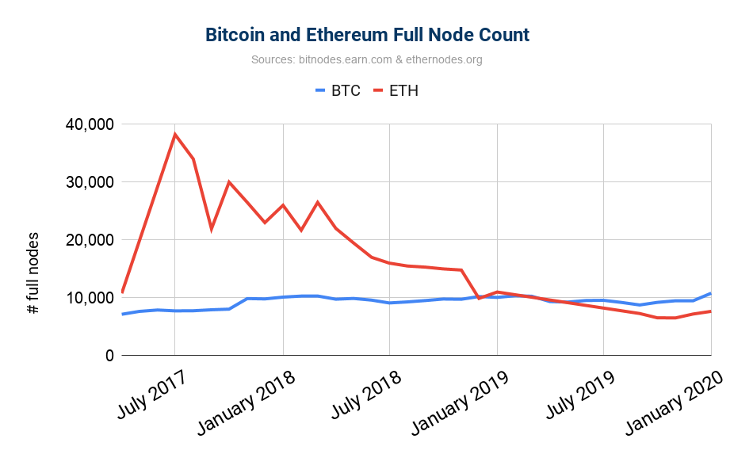

Mina: Decentralized Cryptocurrency at Scale
Joseph Bonneau1, Izaak Meckler2, Vanishree Rao2, and Evan
Shapiro2
1New York University
2O(1) Labs
March 2020
Abstract
We introduce the notion of a succinct blockchain, a replicated state
machine in which each state transition (block) can be efficiently veri-
fied in constant time regardless of the number of prior transitions in the
system.
Traditional blockchains require verification time linear in the
number of transitions. We show how to construct a succinct blockchain
using recursively composed succinct non-interactive arguments of knowl-
edge (SNARKs). Finally, we instantiate this construction to implement
Mina, a payment system (cryptocurrency) using a succinct blockchain.
Mina offers payment functionality similar to Bitcoin, with a dramatically
faster verification time of 200ms making it practical for lightweight clients
and mobile devices to perform full verification of the system’s history.
1
Introduction
Bitcoin and other distributed payment systems (also called cryptocurrencies or
simply blockchains) aim to provide a decentralized system for making and ver-
ifying payments. However, for traditional cryptocurrencies, including Bitcoin,
decentralization comes at the cost of scalability as each node needs to process
the entire system history upon joining the network. Asymptotically, verifying
a blockchain containing 𝑡 transactions requires 𝛺(𝑡) time (usually more than
linear in 𝑡 as bookkeeping is required to resolve transaction references during
verification). At the time of this writing, Bitcoin’s blockchain is over 250 GB
and contains over 500 M transactions (see Figure 1). Downloading and verifying
this history takes days on a typical laptop.
These resource requirements deter most users from running a full node that
stores and verifies the blockchain. As seen in Figure 2, the number of full nodes
in Bitcoin is not growing despite its increasing popularity over time. Instead
most users run a light node, verifying only block headers but not transactions,
or an ultralight node verifying nothing and relying on trusted advice from a
1
trusted server. This undermines decentralization as most clients rely on trust
rather than independent verification. It also undermines performance: block size
(and therefore transaction throughput) is artificially capped in part to mitigate
the burden of verification.
Figure 1: Growth of the Bitcoin blockchain over time, in GB. Source: www.
blockchain.com.
2

Figure 2: Estimated number of full nodes participating in the Bitcoin and
Ethereum networks over time.
Source: www.bitnodes.earn.com and www.
Ethernodes.org.
In this work, our goal is to design a decentralized payment system that
offers efficient verification of system history from genesis without relying on
any external advice. Specifically, we aim to provide verification time constant
(𝑂 (1)) in the number of transactions; we call such a blockchain, a succinct
blockchain.
We achieve this goal by including succinct proofs of state validity in each
block. Generically, it is possible to compute a succinct non-interactive argument
of knowledge (a SNARK) of any NP statement, including for example that
the system stated committed to by the current block in a blockchain can be
reached from a the genesis state by a series of valid transactions in the system.
This (large) list of transactions is a witness that the current block is valid.
However, computing a new proof of validity of the entire system history for
each block would be prohibitively expensive. Instead, we employ techniques
from incrementally computable SNARKs to ensure that the cost of computing
a proof for each block is proportional only to the number of transactions added
since the previous block.
We instantiate the notion of a succinct blockchain and introduce the Mina
protocol. Mina is a payment-oriented blockchain offering similar functionality
to Bitcoin, although with different transaction semantics. In particular, Mina
uses an account-based model (as in Ethereum [24]) (instead of the UTXO model
as in Bitcoin[18] and others [19]), wherein the current state of the blockchain is
a list of all account balances rather than a list of unspent coins (UTXOs).
3
Each block contains a commitment to this state (in a Merkle tree) and not
the entire state. Therefore a full node need not store the entire state, but can
verify account balances efficiently given only the state commitment in the latest
block header. However, a prover in our system (roughly equivalent to a miner
in Bitcoin) does needs to store the full state since it is part of the witness when
proving the validity of new blocks.
For the consensus protocol of Mina, we present the first provably-secure
proof-of-stake (PoS) consensus protocol for succinct blockchains called Ouroboros
Samasika. Note that an off-the-shelf consensus mechanism is not necessarily
compatible with a succinct blockchain framework, since the way consensus is
achieved when there are multiple contending chains could relying on arbitrary
transaction history, forcing nodes to store the entire transaction history. In
fact, this is a natural approach for consensus mechanisms, since the information
needed to tell apart an honest chain from a dishonest one is likely to involve
details at the point of the fork; since it is possible for a party to learn about a
fork long after it occurred, it may need to store the entire history to assist in
the chain selection process. This is indeed the case in the known PoS consensus
mechanisms [16, 12, 3]. Furthermore, other PoS consensus mechanisms rely on
a trusted external advice for bootstrapping [11].
Concretely, in our current implementation, a state proof size is just 864 bytes
and it takes around 200ms to verify it. Thus, any device that can support this
level of computation, such as the current smartphones, can verify the current
state of the system with no trusted advice.
Beyond incrementally computable SNARKs, we employ multiple optimiza-
tions, the most significant of which is parallel scan state. At a high level, this
improves transaction throughput beyond the limits of sequentially computed
proofs. Roughly, the idea is to enqueue all the blocks that still need to be ab-
sorbed into a proof and distribute their proving across parallel provers. We also
introduce a special queue of recent transactions to reduce transaction confirma-
tion latency below the limits imposed by minimum proving times. Furthermore,
we introduce a special incentive structure to maximizing prover participation in
the network.
1.1
Our Contributions
In summary, our contributions are:
• We formalize the notion of a succinct blockchain. This notion may be of
independent interest for alternative constructions of succinct blockchains.
• We present an approach to constructing a succinct blockchain for generic
functionalities modeled as replicated state machines using incrementally-
computable SNARKs.
• We present a concrete implementation of our approach for the specific
functionality of a payments system called Mina.
4
• We present Ouroboros Samasika, a provably-secure PoS consensus proto-
col that is adaptively secure and offers bootstrapping from genesis.
• We introduce the notion of a parallel scan state to improve transaction
confirmation time beyond the limits otherwise imposed by the proof con-
struction.
• We present a performance evaluation report of executing the protocol
involving a public community.
2
Succinct Blockchains
In this section, we introduce the notion of succinct blockchains.
Underlying concepts of a blockchain.
We begin by recalling definitions
of certain underlying concepts of a blockchain [12]. This will assist in defining
succinct blockchains.
Definition 2.1 (State, Block Proof, Block Producer, Block, Blockchain, Genesis
Block). A state is a string st ∈ {0, 1}𝜆. A block proof is a value (or a set of
values)
𝐵
𝜋
containing information to verify whether the block is valid. Each
𝑖
block is associated with a unique party called its block producer. A block 𝐵 =
𝑖
(sn
𝐵
, st , 𝜋
, 𝑑 , b-pk , ğ‘-sig ) generated with a serial number sn ∈
𝑖
𝑖
𝑖
𝑖
N contains the
𝑖
𝑖
𝑖
current state st , a block proof
𝐵
𝜋
, data 𑑠∈ {0, 1}∗, the block producer’s public
𝑖
𝑖
𝑖
key b-pk and a signature
𝐵
ğ‘-sig
on (sn , st , 𜋠, 𑑠) with respect to b-pk .
𝑖
𝑖
𝑖
𝑖
𝑖
𝑖
𝑖
A blockchain is a sequence of blocks C = (𝐵1, . . . , 𝐵 ) associated with a
𝑛
strictly increasing sequence of serial numbers. The first block 𝐵1 is called the
genesis block. The length len(C) = 𝑛 of a blockchain is the number of blocks in
it.
Succinct blockchains.
We are now ready to introduce the definition of a
succinct blockchain protocol. The definition will also introduce the notion of a
blockchain summary, which, at a high level, is some summary of a blockchain
such that the summary is valid if and only if the blockchain is valid. The concept
of a blockchain underlying a blockchain summary will not be evident from the
definition of a succinct blockchain protocol itself. However, it will be captured
via the notion of chain extractability in Definition 2.4.
Definition 2.2 (Succinct Blockchain Protocol). A succinct blockchain pro-
tocol 𝛱 is characterized by a tuple of five PPT algorithms (VerifyConsensus,
UpdateConsensus, VerifyBlock, UpdateChain, VerifyChain) syntactically defined
as follows.
• VerifyConsensus(consensusState, consensusProof) → >/⊥ : This algo-
rithm takes as input a consensusState and a consensusProof, verifies ac-
cording to some notion of correctness and outputs > or ⊥, respectively.
5
• UpdateConsensus(consensusState, consensusProof) → nextConsensusState :
This algorithm also takes as input a consensusState and a consensusProof
and outputs an updated consensus state.
• VerifyChainSummary(S ) → >/⊥ : This algorithms verifies whether a
𝑖
given blockchain summary S is valid or not.
𝑖
• VerifyBlock(S
) → >/⊥ : This algorithms verifies whether a given
𝑖−1 , 𝐵𝑖
block 𝐵 is valid with respect to a given blockchain summary S
𝑖
𝑖−1 .
As a
part of the verification, it checks that VerifyConsensus(consensusState𝑖−1,
consensusProof
→ >, where, S
𝐵
𝑖
𝑖−1
contains consensusState𝑖−1 and 𝜋𝑖
contains consensusProof , where,
𝐵
𝐵
= (·, ·, 𜋠, ·, ·, ·).
𝑖
𝑖
𝑖
• UpdateChainSummary(S
) → S : This algorithm takes a blockchain
𝑖−1 , 𝐵𝑖
𝑖
summary S
and outputs an updated blockchain
𝑖−1
and a new block 𝐵𝑖
summary S .
𝑖
The protocol satisfies the following succinctness property.
Succinctness. Each of the algorithms VerifyBlock, VerifyChainSummary, and
VerifyConsensus runs in time poly(𝜆). Furthermore, the size of the blockchain
summary S at any time 𝑡 is of size poly(𝜆) (i.e., constant in the number
𝑖
𝑖
of chain summary updates).
Remark 2.1 (Consensus mechanism). The algorithm pair (VerifyConsensus,
UpdateConsensus) is said to constitute a consensus mechanism. The following
are some examples of how the notion can be instantiated. For proof-of-work
protocols (e.g. Bitcoin), the consensus state would contain several previous
difficulty targets and block times (from which to compute the current difficulty
target) and a consensus proof would contain the proof-of-work itself along with
a new time to update the state with. For an Ouroboros Praos-style [12] proof-of-
stake mechanism, the consensus state would contain the current random seed,
the (Merkle root of) the current epoch’s stakes, and some information about the
previous blocks and block times. A consensus proof would contain a public-key
and a verifiable random function (VRF) evaluation proof meeting the threshold
target corresponding to that public-key and the stakes indicated in the consensus
state.
Types of Roles.
Per the above definition, there are three kinds of roles in a
succinct blockchain. (There can be additional roles depending on the instanti-
ation.)
1. Full node: In this role, a party keeps track of the blockchain summary
and verifies it.
2. Block producer: In this role, a party produces a block.
3. Blockchain summary producer: In this role, a party generates blockchain
summaries.
6
Note that the significant advantage of a succinct blockchain is that any party
with reasonable resources can be a full node, due to the succinctness property.
That is, a succinct blockchain does not require the role of light clients to cope
with growing blockchain sizes.
Relationship between blockchain summary and underlying blockchain.
Having defined a succinct blockchain in terms of blockchain summaries, we will
now show how the summaries are related to the underlying blockchains. Roughly
speaking, we would like that the blockchain summaries inherit validity of un-
derlying blockchains. That is, a summary is valid if and only if the underlying
blockchain is valid.
Furthermore, given a blockchain summary, we arrive at its underlying
blockchain through the notion of extractability. Specifically, we define extrac-
tion recursively; that is, given a blockchain summary with serial number 𝑖, an
extractor (using some additional information) extracts a blockchain summary
with serial number 𑖠− 1 and a block 𝐵 , wherein all the components satisfy the
𝑖
necessary verification tests. The additional information the extractor uses is the
execution transcript which we call the execution trace formally defined below.
Definition 2.3 (Execution Trace, Blockchain Summary in an Execution Trace).
For an (adaptive) adversary A and an environment Z, an execution trace E
of a blockchain protocol 𝛱 by a set of parties U with security parameter 𝜆
is a transcript including the inputs provided by Z, the random coins of the
parties and the random coins of the adversary. This data determines the entire
dynamics of the protocol: messages sent and delivered, the internal states of the
parties at each step and the set of corrupt parties at each step. We denote the
trace by E ↠𛱠(1𝜆, U) or simply E ↠𛱠(U).
For every blockchain protocol 𝛱 , there exists an algorithm CurrChain, such
that for every set of PPT parties U, E ↠𛱠(U), time 𝑡, honest party 𑃠∈ U, we
have that CurrChain outputs a valid blockchain summary; i.e., CurrChain(E, 𝑃, 𝑡)
→ S and VerifyChainSummary(S) → >. S is said to be the blockchain sum-
mary in 𝑃’s view of E at time 𝑡. A blockchain summary in an execution trace E
is a blockchain summary C in any honest party’s view at any time 𝑡; we denote
this by S ∈ E.
We will now define the notion of chain extractability. This definition utilizes
a notion of ‘serial number of a blockchain summary’.
Intuitively, it is just
a natural number 𝑗 that represents the number of blocks in the underlying
blockchain. It is indicated in the subscript as S .
𝑗
Definition 2.4 (Chain Extractability). A succinct blockchain protocol 𝛱 =
(VerifyConsensus, UpdateConsensus, VerifyBlock, UpdateChain, VerifyChain) is
said to satisfy chain extractability if the following probability Adv𝛱 ,U (1𝜆) is
negligibly close to 1 for every U = {A } , a set of PPT algorithms. For every
𝑖
𝑖
A , there exists a PPT algorithm Ext
, called an extractor, and Adv
𝑖
A
𝛱 , U
is
𝑖
defined as follows.
7
VerifyChainSummary (S 𑗠−1) = >




∧




VerifyBlock(S
) = >
E ↠𛱠(U)
𑗠−1 , 𝐵 𝑗

Adv

∧
:
∀S ∈ E

, ∃A
∈ U
𛱠, U (1𜆠) := Pr 
𝑗
𝑖




𝐵1 is a Genesis block
(S
) ↠Ext
(E, S , 𝑟)
𑗠−1 , 𝐵 𝑗
A
𝑗

𝑖



∧




S0 is an empty string



where, 𝑟 is the random coins of A .
𝑖
Definition 2.5 (Blockchain underlying a Blockchain Summary). Let 𝛱 be a
blockchain protocol which satisfies chain extractability. Let E be an execution
of the protocol by a set of parties U. Let 𑃠∈ U be an honest party that has
been active since the beginning of the protocol. Let S be the blockchain in
ℓ
E 0. For every 1 ≤ 𑖠≤ ℓ, let 𝐵 be a block guaranteed by the property of chain
𝑖
extractability. The sequence (𝐵1, . . . , 𝐵 ) is called the blockchain underlying S .
ℓ
ℓ
2.1
Security Properties of a Succinct Blockchain
We will now enlist the security properties of a succinct blockchain. Rather than
the blockchain summaries, the properties pertain to the underlying blockchain
guaranteed by the chain extractability property.
Consider a blockchain protocol 𝛱 and an execution E. Let C be the un-
derlying blockchain of the blockchain summary S in E. We recall the following
properties that were first rigorously formulated in [14]. We will assume that
time is divided into predefined slots.
Common Prefix (CP); with parameters 𑘠∈ N. The blockchains C1, C2 cor-
responding to two alert parties at the onset of the slots sl1 ≤ sl2 are such
that C d𝑘
d𝑘
1
4 C2, where C1
denotes the blockchain obtained by removing
the last 𑘠blocks from C1 and 4 denotes the prefix relation.
Chain Growth (CG); with parameters ğœ ∈ (0, 1] and ğ‘ ∈ N. Consider C, a
blockchain possessed by an alert party at the onset of a slot sl. Let sl1
and sl2 be two previous slots for which sl1 + ğ‘ ≤ sl2 ≤ sl, so sl1 is at least ğ‘
slots prior to sl2. Then |C[sl1, sl2] | ≥ 𜠷 ğ‘ . We call ğœ the speed coefficient.
Chain Quality (CQ); with parameters 𜇠∈ (0, 1] and 𑘠∈ N. Consider any
portion of length at least 𑘠of the blockchain corresponding by an alert
party at the onset of a slot; the ratio of blocks originating from alert
parties in this portion is at least 𝜇, called the chain quality coefficient.
3
Preliminaries
In this section we provide several requisite definitions of SNARK systems which
we use to construct a succinct blockchain.
8
Notations.
We use the abbreviation PPT to stand for probabilistic polyno-
mial time. We use 𜆠to denote the security parameter.
Definition 3.1 (SNARKs). Let 𝑅 = {(𝜙, 𝑤)} be a polynomial relation of state-
ments 𜙠and witnesses 𝑤. A Succinct Non-interactive ARgument of Knowledge
for 𝑅 is a quadruple of algorithms (sSetup, sProve, sVerify, sSim), which is com-
plete, succinct and knowledge sound (defined below) and works as follows:
• (srs, ğœ) ↠sSetup(𝑅): The setup algorithm generates the structured ran-
dom string srs and a trapdoor ğœ.
• 𜋠↠sProve(srs, 𝜙, 𝑤): the prover algorithm generates a proof 𝜋.
• >/⊥ ↠sVerify(srs, 𝜙, 𝜋): the verifier algorithm verifies a given proof.
• 𜋠↠sSim(srs, 𝜙, ğœ): the PPT simulator simulates a proof without the
witness but by using the trapdoor.
Completeness.
It simply states that given a true statement, a prover with a
witness can convince the verifier. That is, for every (srs, ğœ) ↠sSetup(𝑅) and
𜋠↠sProve(srs, 𝜙, 𝑤), we have that > ↠sVerify (srs, 𝜙, 𝜋).
Succinctness.
It states that the proof size |𝜋| is poly(𝜆).
Knowledge soundness.
It states that whenever somebody produces a valid
argument it is possible to extract a valid witness from their internal data. For-
mally, for every PPT adversary A, there exists a PPT extractor 𝜒A, such that
the following probability is negligible in 𝜆:
 (srs, ğœ) ↠sSetup ( 𝑅)
(𝜙, 𝑤) ∉ 𝑅

Pr 


(𝜙, 𝜋) ↠A (srs)
:
∧




𑤠↠ğœ’A (transA )
sVerify(srs, 𝜙, 𝜋) → >


Simulation-extractable SNARKs.
A simulation-extractable SNARK is a
SNARK that achieves a higher level of security, namely, simulation extractabil-
ity. The notion of simulation extractability is similar to the notion of knowledge
soundness except that an adversary gets to see also simulated proofs.
Signatures of Knowledge (SoK).
An SoK is a generalization of digital sig-
natures by replacing a public key with an instance in an NP language. For
a formal definition, see [15].
The notion of SoKs is related to the notion
of simulation-extractable non-interactive zero-knowledge arguments, such as,
SNARKs. In fact, [15] showed that the former can be constructed based on the
latter. In this work, we rely on SoKs constructed using SNARKs, thereby being
able to exploit succinctness of such SoKs.
9
4
Mina: A Succinct Blockchain based on Recur-
sive SNARKs
In this section, we introduce a succinct blockchain construction called Mina
based on SNARKs. At a high-level, validity of a blockchain’s sequence of tran-
sitions is proved using a SNARK. Then, the blockchain proof consists of this
SNARK and omits the detailed list of blocks, since verifying the SNARK veri-
fies the embedded blocks. Succinctness of SNARK ensures succinctness of the
blockchain.
Note that a blockchain is dynamic and new blocks keep getting added to
it. However, we would like to ensure succinctness at any given point in time.
Therefore, as the blockchain “grows”, we compute a new SNARK proof that not
only validates the new blocks, but also the existing SNARK proof itself. The
notion of a SNARK proof that attests to the verifiability of another SNARK
proof is the notion of “incrementally-computable SNARK†[23, 7, 5].
We will first specify the SNARK construction and then demonstrate how it
can be employed to achieve a succinct blockchain.
4.1
Incrementally-computable SNARKs
We now recall the notion of incrementally-computable SNARKs described var-
iously in [23], [7] and [5]. Instead of phrasing the construction in the language
of incrementally verifiable computation as in [23] or in the language of PCD
(proof-carrying data) systems as in [7] and [5], we opt to describe it in terms
of state-transition systems as it maps more clearly onto the application of pro-
ducing a succinct blockchain.
We will first recall the definition of a state transition system.
Definition 4.1 (State transition system). A state transition system is a
tuple ( 𝛴 , T, Update), where 𝛴 is the set of states, T is the set of transitions and
Update is a (non-deterministic) poly-time computable function Update : T×𛴠→
𛴠. Update may also “throw an exception†(i.e., fail to produce a new state for
certain inputs). Moreover, elements in 𝛴 and T need to be representable by
bit-strings of length poly(𝜆).
We now define SNARKs for state transition systems. At a high level, we
would like poly(𝜆)-size proofs (which are verifiable in poly(𝜆) time) which attest
to statements of the form “there exist a state σ1 and a sequence of transitions
𝑡1, . . . , 𝑡
∈ T such that Update(𝑡 , Update(𝑡
𝑘
𝑘
𑘠−1 , . . . , Update (𝑡1 , σ1 ) ) )
= σ2”.
In other words, we would like succinct certificates of the existence of state-
transition sequences joining two states. The application to blockchains is the
following: we will take our state to be the database of accounts (along with
some metadata needed for correctly validating new blocks) and transitions to
be blocks.
Definition 4.2 (Incrementally-computable SNARKs). An incrementally-comp-
utable SNARK for a state transition system ( 𝛴 , T, Update) is a tuple of algo-
10
rithms (sSetup, sProve, sVerify, sSim) such that the following holds. Suppressing
parameter generation and passing the parameters to sProve and sVerify,
1. (sSetup, sProve, sVerify, sSim) is a SNARK.
(sSetup, sProve, sVerify, sSim) is a SNARK for the relation 𑅠= {(σ
),
𝑖+𝑘
σ , 𝑡
)}, where, σ
= Update(𝑡
, Update(𝑡
𝑖
𝑖+1 , . . . , 𝑡𝑖+𝑘
𝑖+𝑘
𝑖+𝑘
𝑖+𑘠−1 , . . . , Update
(𝑡
))) for any 𝑘.
𝑖+1 , σ𝑖
2. (sSetup, sProve, sVerify, sSim) is succinct.
Every honestly generated proof has size poly(𝜆) and for any 𝜋, σ, we have
that sVerify(σ, 𝜋) runs in time poly(𝜆).
4.1.1
Incrementally-computable SNARKs using Recursive Proof Com-
position
Na¨ıve recursive composition is theoretically viable, since, for a SNARK, proof
verification is asymptotically cheaper than merely verifying the corresponding
NP statement. However, it is extremely expensive. Although SNARK verifiers
execution is quite fast – in the order of just a few milliseconds on a desktop
computer, generating a SNARK proof to attest to an accepting verifier circuit
is expensive. This is because, executing the verifiers still takes millions of steps
in computation, proving which is impractical even for a single layer of recursion,
as explained in [5].
To address this, we employ the “cycle of elliptic curves†technique (as de-
scribed in [5]) in which two SNARK constructions – classically called Tick and
Tock – are designed such that each can efficiently verify proofs from the other.
Then, we define the Tick and Tock SNARKs to result in a “binary tree of proofs”
as follows. A Tick SNARK is used to certify state transitions at the “base†of
the tree. Then, to enable efficient merging of those proofs, each of them is
“wrapped†using a Tock SNARK. Then, two Tock proofs are merged using a
Tick SNARK.
Therefore, note that, we will need two Tick SNARKs - one for proving state
transitions and another for merging two Tock proofs. And we will need one
Tock SNARK to wrap a Tick proof into a Tock proof. More formally:
1. The base SNARK. A Tick-based SNARK for certifying single state tran-
sitions, which we will call the “base†SNARK.
Statement: (σ
2
1, σ2) ∈ 𛴠.
Witness: 𑡠∈ T.
Computation: There exists 𑡠∈ T such that Update(𝑡, σ1) = σ2.
We will denote the proof by σ1 →Tick σ2.
2. The merge SNARK. A Tick-based SNARK for merging two Tock proofs,
which we will call the “merge†SNARK.
Statement: (σ
2
1, σ3) ∈ 𛴠.
11
Witness: σ2 ∈ 𝛴 and Tock-proofs 𝜋1, 𝜋2.
Computation: There exist σ2 ∈ 𝛴 and Tock-proofs 𝜋1, 𝜋2 such that
Verify
( (
( (
Tock
σ1, σ2), 𝜋1) and VerifyTock σ2, σ3), 𝜋2)
We will denote the proof by σ1 →Tick σ3. σ1 to σ2 and a SNARK proof
certifying the existence of transitions from σ2 to σ3.
3. The wrap SNARK. A Tock-based SNARK for wrapping a Tick proof,
which we will call the “wrap†SNARK.
Statement: (σ
2
1, σ2) ∈ 𛴠.
Witness: A Tick proof 𝜋.
Computation: There exists a Tick proof 𜋠such that Verify
( (
Tick
σ1, σ2), 𝜋).
We will denote the proof by σ1 →Tock σ2.This SNARK merely wraps a
Tick SNARK into a Tock SNARK so that another Tick SNARK can verify
it efficiently.
4.1.2
An example transition system
To illustrate this, we’ll show how it can be applied to prove statements in a very
simple transition system where each state is simply the hash H of the previous
state. Assume the current state is 0
𝑥
= H(H(. . . H(𝑥) . . . )) for some 𝑘, starting
|
{z
}
𝑘
from an initial state 𝑥. We apply the above technique with our state 𝛴 being the
union of domain and range of H, 𑇠being a singleton set containing an empty
string, and the update function being Update(𝑡, 𝑥) = H(𝑥).
This gives us a SNARK for proving that there exists a sequence of transi-
tions (
0
𝑡1, . . . , 𝑡 ) such that Update(𝑡 , Update(𝑡
,
𝑘
𝑘
𑘠−1 , . . . , Update (𝑡1 , 𝑥 ) , . . . ) ) = 𝑥
which since Update(𝑡, 𝑦) = H(𝑦) gives us exactly what we want. For strings
𝑥0, 𝑥4 with H(H(H(H(𝑥0)))) = 𝑥4, the tree of SNARK proofs appears as follows:
𝑥0 →Tick 𝑥4
𝑥0 →Tock 𝑥2
𝑥2 →Tock 𝑥4
𝑥0 →Tick 𝑥2
𝑥2 →Tick 𝑥4
𝑥0 →Tock 𝑥1
𝑥1 →Tock 𝑥2
𝑥2 →Tock 𝑥3
𝑥3 →Tock 𝑥4
𝑥0 →Tick 𝑥1
𝑥1 →Tick 𝑥2
𝑥2 →Tick 𝑥3
𝑥3 →Tick 𝑥4
4.2
Mina: A Succinct Blockchain Using Incrementally-
computable SNARKs
In this section, we present the Mina protocol, a succinct blockchain based
on incrementally-computable SNARKs. Intuitively, blockchain updates can be
12
seen as a state transition system, and thus incrementally-computable SNARKs
(which are simply SNARKs for state transition systems) can enable the con-
struction of succinct blockchains.
4.2.1
Our Construction
In this section, we present the Mina protocol. Specifically, we discuss the details
for generic Turing-complete functionalities that transform a database. Then, in
Section 5, we will instantiate the protocol with the payments functionality.
At a high level, we will treat a blockchain as a state transition function.
Consider, for example, a UTXO (Unpaid Transaction Output) model wherein
every party has an ‘account’ with some ‘balance’, like in Bitcoin. The state of
the blockchain is a database (such as a Merkle tree) of all the account balances.
A transition is transfer of some part of the balance from one account to another
account. While this is just an example, our protocol is generic and considers
any state set
0
𝛴
and a Turing-complete transition function Update0 with some
transition set T0; that is, we begin with ( 0
𝛴 , T0, Update0).
Then, the Mina protocol for ( 0
𝛴 , T0, Update0) is constructed as follows. We
employ our consensus protocol, namely Ouroboros Samasika, that we present
in Section 7. We will combine ( 0
𝛴 , T0, Update0) and the consensus protocol
to construct a new state transition system ( 𝛴 , T, Update), mainly to subsume
consensus verification in the update function. An incrementally-computable
SNARK for ( 𝛴 , T, Update) is employed and the proofs attest to the current
state being computed correctly. The blockchain summary simply consists of
the state in 𝛴 and the proof. A blockchain summary producer will just be a
prover and a full node will only need to perform proof verification to verify the
blockchain correctness.
Having described the protocol at an intuitive level, we will now discuss the
details. Given ( 0
𝛴 , T0, Update0) and a collision-resistant hash function H, the
protocol components are as follows.
The Mina Protocol
The Mina protocol has the following components.
• Consensus mechanism (UpdateConsensus, VerifyConsensus): The
consensus mechanism is the Ouroboros Samasika protocol that we
present in Section 7. In Ouroboros Samasika VerifyConsensus runs
in time poly(𝜆), as required.
• Blocks: Consider a transition 0
0
0
𝑡
∈ 𑇠ğ‘ğ‘¢ that acts on a state ğœ
. The
𝑖
𝑖−1
corresponding block
𝐵
𝐵
= (sn , st , 𜋠, 𝑑 , b-pk , ğ‘-sig ) is constructed
𝑖
𝑖
𝑖
𝑖
𝑖
𝑖
𝑖
with st =
0
𝐵
0
ğœ
, 𝜋
= consensusProof and 𝑑 = 𝑡 .
𝑖
𝑖
𝑖
𝑖−1
𝑖
𝑖
• State transition system for SNARK: Consider the state transi-
tion system (
0
𝛴 , T, Update)
defined as follows:
𝛴
=
{H(ğœ ),
consensusState} 0
0
ğœ ∈ 𝛴 ,consensusState . A transition is a block. The func-
13
tion Update(𝐵 , ğœ
) = ğœ
𝑖
𝑖−1 )
verifies if H(st𝑖
𝑖−1 ,
the signature veri-
fies in the block verifies and that VerifyConsensus(consensusState𝑖−1,
consensusProof ), where consensusState
𝐵 con-
𝑖
𝑖−1 is part of 𝜎𝑖−1 and 𝜋𝑖
tains consensusProof .
𝑖
• Blockchain summary: The blockchain summary consists of a state
in 𝛴 and a proof snark .
𝑖
• VerifyChainSummary(S
, snark )): As mentioned earlier, this
𝑖−1 = ( 𝜎𝑖
𝑖
algorithm simply verifies the proof snark against the statement ğœ .
𝑖
𝑖
• VerifyBlock(S , 𝐵 ): This algorithm, simply checks the consistencies,
𝑖1
𝑖
namely, verifying consensus, verifying signature and verifying that
the state in S
is the hash of the state in the block.
𝑖1
• UpdateChainSummary(S
): Let S
𝑖−1 , 𝐵𝑖
𝑖−1
= (𝜎𝑖−1, snark𝑖−1). This
algorithm runs the Update function as Update(𝐵 , ğœ
𝑖
𝑖−1 )
to obtain
ğœ . Then, it verifies the proof snark
𝑖
𝑖−1 . Finally, it runs the prover to
obtain the new proof snark .
𝑖
Figure 3: The Mina protocol.
Remark 4.1. We assume that the length of the blockchain does not affect chain
extractability, because no evidence suggests otherwise for the constructions of
SNARKs that we use, as also noted in [6].
5
The Mina Protocol for Payments
In this section, we will focus on the payments application, where each party has
an account with some balance and a transaction moves a part of its balance to
a different party’s account.
In the following, we will first specify the payments application framework
followed by the underlying SNARK construction and then present the Mina
protocol for payments.
5.0.1
Mina’s Framework for Payments
Let U be a set of parties. The framework consists of the following notions.
• Accounts.
Every party is said to have an account characterized by
(pk, balance, nonce), with pk the party’s public key for authorizing pay-
ments, balance ∈ N, and nonce ∈ I which functions to prevent transaction
replay.
• Ledger. We define a ledger as the list of all the accounts. We will refer to
a party’s account by L(pk) and the fields of the account, such as balance,
by L(pk).balance.
14
• Transaction. A transaction is a transfer of value amt from a Sender’s
account L(pk ).balance to a Receiver’s account L(pk ).balance. It is repre-
ğ‘
𝑟
sented as txn = (pk , pk , amt, nonce , sig ), where pk , pk are the Sender’s
ğ‘
𝑟
ğ‘
ğ‘
ğ‘
𝑟
and the Receiver’s public keys, respectively, nonce is the nonce in the
ğ‘
Sender’s account and sig is a signature on (pk , amt, nonce ) by the Sender.
ğ‘
𝑟
ğ‘
• Transaction verification. Given a transaction txn and a ledger L, the
following algorithm verifies validity of the transaction.
VerifyTransaction(txn = (pk , pk , amt, nonce , sig ), L):
ğ‘
𝑟
ğ‘
ğ‘
assert (L(pk ).balance ≥ amt);
ğ‘
assert (L(pk ).nonce = nonce );
ğ‘
ğ‘
assert (VerifySig(pk , (pk , amt, nonce ), sig ) = >);
ğ‘
𝑟
ğ‘
ğ‘
return >
• Ledger update.
Given a ledger L and a set of transactions {txn =
(pk , pk , amt, nonce , sig )}, the following algorithm processes the set by
ğ‘
𝑟
ğ‘
ğ‘
updating the ledger.
UpdateLedger(L, {txn}):
∀txn ∈ {txn}
- L(pk ).balance ↠L(pk ).balance − amt;
ğ‘
ğ‘
- L(pk ).balance ↠L(pk ).balance + amt;
𝑟
𝑟
- L(pk ).nonce ↠L(pk ).nonce + 1;
ğ‘
ğ‘
return L
5.0.2
The SNARK
We will now describe the incrementally-computable SNARK S used for con-
structing our succinct blockchain. Recall that a state transition system charac-
terizes an incrementally-computable SNARK (cf. Definition 4.2). S is specified
in Figure 4.
SNARK S
Let H be a collision-resistant hash function. S is defined as an incrementally-
computable SNARK for the following state transition system ( 𝛴 , T, Update):
• 𛴠is the set {σ} of pairs of ledger hash values and consensus states
𝑖
{(ledgerHash , consensusState )}.
𝑖
𝑖
• T is the set of blocks 𝐵 is of the form (𝑖, L
,
𝑖
𝑖−1 ,
consensusProof𝑖
{txn } , b-pk , ğ‘-sig ), {txn } is a set of transactions and b-pk is a
𝑗
𝑗
𝑖
𝑖
𝑗
𝑗
𝑖
public key for verifying the signature ğ‘-sig .
𝑖
• The function Update(𑡠, σ
is defined as follows:
𝑖
𝑖−1 ) → σ𝑖
15
Update(𑡠, σ
:
𝑖
𝑖−1 ) → σ𝑖
assert (VerifyTransaction(txn , L
;
𝑗
𝑖−1 ) = >) ,
∀txn 𝑗
assert (ledgerHash𝑖−1 = H(L𝑖−1));
assert (VerifyConsensus(consensusState𝑖−1,
consensusProof ) = >);
𝑖
assert (VerifySig(b-pk , 𝑚, ğ‘-sig ) = >), where 𝑚 =
𝑖
𝑖
(𝑖, L
, {txn } );
𝑖−1 , consensusProof 𝑖
𝑗
𝑗
L ↠UpdateLedger(L
} );
𝑖
𝑖−1 , {txn 𝑗
𝑗
ledgerHash ↠H(L );
𝑖
𝑖
consensusState ↠UpdateConsensus(
𝑖
consensusState
);
𝑖−1 , consensusProof 𝑖
return σ ↠(ledgerHash , consensusState )
𝑖
𝑖
𝑖
Figure 4: The underlying SNARK S.
5.0.3
Our Construction
Let (VerifyConsensus, UpdateConsensus) be the Ouroboros Samasika consensus
mechanism. Let H be a collision-resistant hash function. The Mina protocol is
defined as follows.
The Mina Protocol for Payments
The Mina protocol for payments, defined in the framework from Section
5.0.1, is based on the SNARK in Figure 4. It has the following components.
• A blockchain C𝑖−1. A blockchain consists of the hash of the current
ledger, the current consensus state and a SNARK proof. That is,
C𝑖−1 = (ledgerHash𝑖−1, consensusState𝑖−1, snark𝑖−1)
.
• A block 𝐵 . Recall that a block in general is of the form 𝐵 =
𝑖
𝑖
(sn
𝐵
, st , 𝜋
, 𝑑 , b-pk , ğ‘-sig ), where sn , b-pk , ğ‘-sig are serial number,
𝑖
𝑖
𝑖
𝑖
𝑖
𝑖
𝑖
𝑖
𝑖
block proposer’s public key and a signature on (sn
𝐵
, st , 𝜋
, 𝑑 ) by the
𝑖
𝑖
𝑖
𝑖
block proposer, respectively. st
𝐵
, 𝜋
, 𝑑
are specified as follows.
𝑖
𝑖
𝑖
– st = L
𝑖
𝑖−1 ;
–
𝐵
𝜋
= consensusProof ;
𝑖
𝑖
– 𑑠= {txn } .
𝑖
𝑗
𝑗
16
The algorithms VerifyBlock, UpdateChain, VerifyChain are defined as
follows.
• VerifyBlock(S
) → >/⊥:
𝑖−1 , 𝐵𝑖
assert (H(L
);
𝑖−1 ) = ledgerHash𝑖−1
assert (VerifyConsensus(consensusState𝑖−1,
consensusProof ) = >);
𝑖
∀ 𑗠assert (VerifyTransaction(txn , L
𝑗
𝑖−1 ) = >) ;
assert (VerifySig(b-pk , 𝑚, sig ) = >),
𝑖
𝑖
where 𝑚 = (sn , L
, {txn } )
𝑖
𝑖−1 , consensusProof 𝑖
𝑗
𝑗
return >
• UpdateChainSummary(S
) → C :
𝑖−1 , 𝐵𝑖
𝑖
assign σ𝑖−1 ↠(ledgerHash𝑖−1, consensusState𝑖−1);
σ ↠Update(𝐵 , σ
𝑖
𝑖
𝑖−1 ) ;
snark ↠sProve(σ , (σ
));
𝑖
𝑖
𝑖−1 , 𝑡𝑖
assign S ↠(σ , snark );
𝑖
𝑖
𝑖
return S𝑖
• VerifyChainSummary(S ) → >/⊥:
𝑖
assign σ ↠(ledgerHash , consensusState );
𝑖
𝑖
𝑖
return sVerify(σ , snark )
𝑖
𝑖
Figure 5: The Mina protocol for payments.
6
Snark Workers
In this section, we will introduce two optimization techniques, namely, ‘parallel
scan state’ and ‘prover incentives’. They both target the following issue.
The issue.
Observe from Figure 3 that to compute S , we need S
𝑖
𝑖−1 .
Thus,
there is a sequential dependency for SNARK proof computation. As a result, a
na¨ıve implementation suffers from a block time that is at least the time required
to compute the proof. Furthermore, it suffers from high memory requirements
for block proposers due to high transaction latency (where, transaction latency
is the time required for a transaction to be summarized in a SNARK proof).
17
The solution.
The goal is to design techniques that maximize the through-
put. Specifically, our goal is to maximize the rate at which transactions can
be processed and validated in the Mina protocol network. This enables more
simultaneous users on the network.
6.1
Parallel Scan State
Recall that a raw chain of blocks is inherently sequential (i.e., cannot be par-
allelized in general).
However, thanks to incremental computability of the
SNARK, the SNARK work can be parallelized. This is the key observation
that leads to the notion of a ‘parallel scan state’, where we decouple producing
a block from computing SNARK proofs.
We maintain a special queue, called the work queue, where we enqueue new
blocks as they are proposed. In other words, it is a queue of the ‘SNARK work’
to be performed by the network.
The network then computes the SNARK proofs in parallel; a tree of proofs
is computed where the leaves correspond to the proofs proving validity of single
blocks and the other proofs simply attest to the correctness of their children
proofs. Finally, the root proof attests to correctness of all the blocks corre-
sponding to the leaves of the tree. Consider, for example, a sequence of blocks
𝐵 , 𝐵
in the work queue. The root proof attests to the validity of each
𝑖
𝑖+1 , . . . , 𝐵 𝑗
of the blocks. This root proof can be combined with the SNARK proof for
the validity of S𝑖−1 to result in a SNARK proof that attests to the validity of
S . This is illustrated in Figure 6. Note that this tree, under the hood, works
𝑗
similarly to the example transition system described in Section 4.1.2.
Figure 6: A snapshot of a parallel scan state.
Observe that, by careful design of parallelism, we can ensure that the through-
put completely keeps up with the rate transactions are added, which is optimal.
While the transaction latency in the na¨ıve approach was 𝑂 (𝑅), where 𝑅 is the
rate at which blocks are produced, in the proposed approach, the transaction
latency is 𝑂 (log(𝑅)). With a careful designing of data structure, the storage
requirement can be reduced from 𝑂 (𝑅) in the na¨ıve approach to 2𑅠− 1 + 𝑂 (1)
in the proposed approach; we will omit the details of the data structure [?].
6.2
Incentivizing the Provers
A party that generates SNARK proofs is called a snarker. We will describe
prover incentives with the goal of achieving lowest possible transaction latency
18
(i.e., to minimize the time gap between when a block is produced and when it
is absorbed in the blockchain’s SNARK proof).
The proposed incentive structure is the following. Every block producer that
pushes a block to the work queue is required to pop a block by generating a
proof validating the block. It posts a fee request together with the SNARK
proof it generates. It also includes a transaction in the same block that pays
the fee to the prover that will compute the snark for that block. Typically, the
fees are paid out from the transaction fees the block producer would otherwise
receive.
In essence, there is a lowest-price auction for each piece of SNARK work.
Block producers would like to pay snarkers as little as possible for their proofs
and snarkers would like to receive as high a fee as possible for their proofs.
Therefore, enforcing a block producer to also be a prover but for a different
block enforces stability in the system.
Note that this notion is similar to the aforementioned na¨ıve approach in that
a block producer also computes a SNARK proof, but with the difference that
the block producer computes proof for the block in the head of the queue.
Remark 6.1. Given a proof and an associated fee request, we require that an
adversary cannot maul the fee request. Otherwise, an attacker could pass-off
a different party’s proof as their own (by replacing the public key) or modify
someone’s fee request.
Signatures of knowledge are a cryptographic primitive that allows us to
accomplish exactly this, as recalled in Section 3. In Mina, we use a construction
based on the Bowe–Gabizon simulation-extractable SNARK [8].
7
Ouroboros Samasika – PoS Consensus for Suc-
cinct Blockchains
One of the main technical contributions of this paper is the first provably-secure
proof-of-stake consensus protocol for a succinct blockchain. Existing protocols
are either not adaptively secure or rely on a centralized trusted third party for
checkpointing advice to nodes trying to bootstrap or rely on arbitrary informa-
tion in the history of the protocol for chain selection, immediately rendering the
protocol incompatible for succinct settings [16, 12, 3, 11].
We construct a consensus protocol that is secure against adaptive corruption
and does not require a trusted checkpointing service for bootsrapping, is adap-
tively secure and, most importantly, succinct. That is, it requires only succinct
information to tell apart honest chains from dishonest ones, immaterial of how
far in history they had forked. Our starting point is the Ouroboros Genesis [3]
(sometimes referred to as Genesis in this paper) PoS consensus protocol.
Ouroboros Genesis already enjoys adaptive security and offers boostrapping
from Genesis. However, the chain selection rules require information about an
arbitrary distance in a chain’s history; this is natural, since, an adversary might
modify arbitrary aspects of the blockchain to create a fork and the timing of
19
the fork might be learned by parties long after it has occurred. For this reason,
Ouroboros Genesis by itself is not usable in the succinct setting. The challenge
is to somehow craft a constant-sized summary of the history that suffices in
correctly choosing one chain from multiple candidates.
In this section, we present
Protocolboros wherein we resolve the above challenge. Specifically, we demon-
strate an approach to succinctly summarize the information necessary to cor-
rectly arbitrate chains with long-range forks.
7.1
Intuitive Description
In this part of the section, we will particularly focus on the core of a consen-
sus protocol, namely, the chain selection rules. The entire consensus protocol
appears in detail, along with the proofs of security, in Section 7.3.
We will begin by recalling the rules of Ouroboros Genesis.
The chain selection rules of Ouroboros Genesis.
There are two chain
selection rules in Ouroboros Genesis. One is when the fork is a short-range one;
in this case, the rule is simply to choose the longest chain. The other is when
the fork is a long-range one; in this case, one may not simply choose the longest
chain, since an adversary could have posed various attacks over time to perhaps
skew the leader selection distribution and managed to create a longer chain.
Therefore, for long-range forks, the rule is to limit the comparison of chains to
just a few slots immediately following the fork.
Note that the rule for long-range forks requires information at arbitrary
times in the history. Clearly, it is not trivial to summarize the information
succinctly.
We now present the chain selection rules of
Protocolboros.
The chain selection rules of
Protocolboros.
Similar to Genesis,
Protocolboros also has two consensus rules applicable depending on how far in
history the fork has occurred.
Short-range fork rule. Roughly speaking, this rule is triggered whenever the
fork is in such a way that the adversary has not yet been able to modify
the block density distribution and the rule is to simply choose the longest
chain. While the action of the rule is the same as in Ouroboros Genesis,
the predicate for deciding whether a given fork is a short-range one or not
is slightly different. Since the main contribution is the long-range fork
rule, we defer the exact description of the predicate to Appendix 7.7.
Long-range fork rule. This rule is applied for forks that occurred more than
𑘠blocks ago. Before we describe the rule itself, following is the intuition.
Firstly, recall the reason why simply the longest chain rule might not
20
choose the right chain in this case; after an adversary creates a fork,
over time, it might skew the leader selection distribution leading to a
longer adversarial chain. Due to this, we can only rely on the density
difference in the first few slots following the fork (which is indeed what
Ouroboros Genesis utilizes). The challenge is to somehow “carry forward”
the summary of that density difference, even when the fork position – and
hence the slot range in question – is not known ahead of time.
The idea.
The idea is to consider a moving window of slots and only
store the minimum of all the densities observed so far in that window. Ob-
serve that this idea almost resolves the challenge: for a dishonest chain,
even if the adversary manages to increase the chain density, the minimum
density value points to the window following the fork, providing the re-
quired summary. On the other hand, for the honest chain, there is not a
huge fluctuation in the densities and, due to majority stake on the chain,
the minimum density value across the chain is likely to be higher than
that for the dishonest chain.
While this almost completely resolves the challenge, there is one other part
to the challenge we still need to address. Namely, how long the window
should be and how it should slide. This is critical, as it is constrained
by two conflicting requirements: (1) The max-length of the window, since
post a certain point after the fork, no guarantees can be made on the block
densities in the adversarial chain and (2) The min-length of the window,
since some minimum number of samples are required to tell apart the given
two distributions. Let us call the window of the critical length following
the fork, that satisfies both the constrains as the “critical window ”. So
the challenge is to design the window length and its movement so that no
matter where the fork is positioned, the moving window will capture the
entire critical window in one shot. The idea is to have the window length
slightly greater than the critical window length. As far as moving of the
window is considered, firstly note that a na¨ıve shifting window (where the
next shift moves the beginning of the window to after its current end)
may not capture the entire critical window in any given position, since a
fork can occur at arbitrary slots. The idea is to have the window shift
by a fraction of its size. We call the resulting window as the “𝜈-shifting
ω-window”, where ω is the window length and 𜈠is the length by which
it shifts (cf. Definition 1). With careful calibration of 𜈠and ω, we can
ensure that the window captures the critical window.
This intuition is formally proven later in Theorem 2.
Below, we formally describe the chain selection rules.
Our new chain
selection rule, formally specified as algorithm maxvalid-sc(·) (see Figure 7),
surgically adapts the chain selection rule of Ouroboros Genesis, namely
maxvalid-bg(·) (see Figure 20), but by replacing the long-range fork rule
with a new one. We will continue all the discussions by referring to the
21
underlying blockchains of chain summaries. We will note that the only
information about the underlying blockchains needed in any part of the
consensus mechanism is a fixed number of blocks in the immediate history.
Therefore, the consensus verification is succinct.
Here, Cloc is the local chain, N = {C1, . . . , C } is the list of chains to
𝑀
choose from. The function isShortRange(C, C0) outputs whether or not
the chains fork in the “short range†or not. The function getMinDen(C)
outputs the minimum of all the window densities observed thus far in C;
it is formally defined in Figure 16.
Algorithm maxvalid-sc(Cloc, N = {C1, . . . , C }, 𝑘)
𝑀
// Compare Cloc with each candidate chain in N
1. Set Cmax ↠Cloc
2. for 𝑖 = 1, . . . , 𝑀 do
if isShortRange(C , C
𝑖
max) then // Short-range fork
if |C | > |C
𝑖
max | then
Set Cmax ↠C𝑖
end if
else //Long-range fork
if getMinDen(C ) > getMinDen(C
𝑖
max) then
Set Cmax ↠C𝑖
end if
end if
end for
3. return Cmax
Figure 7: The new chain selection rule.
7.2
Background
We introduce many relevant concepts from Ouroboros Genesis which remain
the same in our setting too. We begin by recalling a summary of the Ouroboros
family of protocols.
The Ouroboros family of consensus protocols.
Kiayias et al. proposed
the first proof-of-stake (PoS) protocol Ouroboros [16] with rigorous security
22
guarantees. However, the adversarial model only considered synchronous net-
works. Here, the protocol execution is divided into time units called slots and
groups of slots form epochs.
The adversarial model was strengthened in the follow-up work Ouroboros
Praos [12] by considering the semi-synchronous setting (where, the protocol
execution is still divided into slots and epochs, but the network could experience
a maximum delay of 𛥠slots in delivering messages.) This work introduced the
notion of “empty slots†as an artificial way to provide short periods of silence
for parties to catch up in the cases of message delivery delays. An important
point to note about the Ouroboros Praos is its chain selection rule. Whenever
there are two chains that have forked ‘recently’ (i.e., when there is a so-called
‘short-range fork ’), it chooses the longer chain. On the other hand, i.e., if the
fork is far back in history (or when there is a so-called ‘long-range fork ’), then
it simply relies on a trusted external service (called the checkpointing service)
to provide the advice on the honest chain. Clearly, this introduces a strong
element of centralization which is tackled in the follow up project.
Finally, Ouroboros Genesis overcame the Ouroboros Praos’s drawback
of relying on an external service for resolving long-range forks by providing an
additional chain selection rule [3]. Specifically, the rule considers a short range ğ‘
of slots soon after the long-range fork and chooses the chain with higher density
in those ğ‘ slots.
Modeling time: Slots, epochs and empty slots.
The protocol execution
time is divided into epochs which are further divided into slots. There are 𝑅
slots in an epoch. Like in Ouroboros Praos and Ouroboros Genesis, some slots
can be “empty†(i.e., without any block associated with them). Specifically, a
consensus parameter, 𝑓 , denotes the probability that any given slot has a block
producer assigned to it. If no block producer is assigned to a slot, then the slot
is empty (i.e., without a block).
Types of parties.
We categorize parties in a way that models various real-life
scenarios, such as, newly joining parties and parties with temporary connectiv-
ity/availability issues, as detailed fully in [3]. The model defines three kinds of
parties as follows. Alert parties are parties that have access to all the required
resources, and are also synchronized. These parties enjoy full security guar-
antees and we will require a lower bound on their stake (see below) to ensure
security. Potentially active parties (or active, for short) are all parties that,
broadly speaking, might potentially act in the current time slot of the protocol
execution. This includes honest parties that have access to all the required re-
sources as well as adversarial parties. Inactive parties are all other parties, such
as honest parties that cannot access some of the necessary resources to engage
with the protocol, e.g., their network connection.
Stake distributions.
The protocol is assumed to maintain the following ra-
tios:
23
• 𛼠≥ 1/2 is the ratio of the alert stake to the active stake.
• 𛽠is the ratio of the active stake to the entire stake.
Epoch randomness and leader selection distributions.
Stake distribu-
tion considered in an epoch ep is actually the stake distribution at the last slot
of ep − 2. Besides stake distribution, the notion of epoch randomness influences
leader selection distribution in any epoch. Specifically, epoch randomness is
derived as a function of certain blocks information from the first two-thirds of
ep − 1.
An important remark which we will use in our proofs is the following fact:
Consider a fork at sl∗, where a dishonest chain forks from an honest chain. For
𝑅/3 slots following sl∗, the epoch randomness and leader selection distributions
are guaranteed to be unskewed. However, in the slots following the 𝑅/3 slots,
no such guarantee can be placed on the distribution in the dishonest chain.
4
Notations.
For a chain C and an interval of slots 𝐼 = [sl , sl ] = {sl , . . . , sl },
𝑖
𝑗
𝑖
𝑗
we denote by C[𝐼] = C[sl , sl ] the sequence of blocks in C such that their slot
𝑖
𝑗
numbers fall into the interval 𝐼. We replace the brackets in this notation with
parentheses to denote intervals that do not include endpoints; e.g., (sl , sl ] =
𝑖
𝑗
{sl
}. Finally, we denote by |C[𝐼] | the number of blocks in C[𝐼]. We
𝑖+1 , . . . , sl 𝑗
typically denote a party by 𝑃.
7.3
The New Chain Selection Rules
In this section, we describe the proposed chain selection rule for the succinct
setting. The description is structured so as to clearly highlight (in blue) the dif-
ferences from the corresponding Ouroboros Genesis protocols and algorithms.
Algorithms/protocols that are completely novel to Ouroboros Samasika have
only their names highlighted; the description is not highlighted for readability.
Moreover, in protocol descriptions, the details that are common to Ouroboros
Samasika and Ouroboros Genesis are mentioned but not delved deep into, so as
to (a) stay focused on the main contribution and (b) maintain a pseudocode
level of description.
We defer the reader to [3] for the details common to
Ouroboros Samasika and Ouroboros Genesis. The formal chain selection al-
gorithm maxvalid-sc was presented in Figure 7.
7.3.1
The short-range chain selection rule
Recall that a fork is a short-range one when it can be guaranteed that an
adversary has not yet modified the block density distribution. maxvalid-sc calls
the predicate isShortRange that outputs whether a given range is short-range
one or not in this sense. The predicate is described as follows.
24
Algorithm isShortRange(C1, C2)
1. Let prevLockcp and prevLockcp be the prevLockcp components in the
1
2
last blocks of C1, C2, respectively.
2. if prevLockcp = prevLockcp then
1
2
3.
return >
4. else
5.
return ⊥
Figure 8: The algorithm to determine when a given fork is a short-range one or
not.
Below in Figure 12 is the protocol executed to select a new chain, denoted
as SelectChain.
Protocol SelectChain(𝑃, sid, Cloc, N = {C1, . . . , C }, 𝑘)
𝑀
// Step 1: Discard invalid chains
1. Initialize Nvalid ↠∅
2. for 𝑖 = 1, . . . , 𝑀 do
Invoke Protocol IsValidChain(𝑃, sid, Cloc, C , 𝑘); if it returns > then
𝑖
update Nvalid ↠Nvalid ∪ {C }
𝑖
end for
// Step 2: Apply chain selection rule on valid chains
3. Execute Algorithm maxvalid-sc(Cloc, Nvalid, 𝑘). Denote the output
chain by Cmax.
4. Set Cloc ↠Cmax. Output Cloc.
Output: Output Cloc.
Figure 9: The protocol for parties to select a chain when there is more than
one.
7.4
The Window Min-density
The core concept in the new chain selection rule is that of the window min-
density. As mentioned earlier in this section, the idea is to consider a shifting
25
window and to always maintain a minimum of densities in all the windows so
far.
More formally, we employ a 𝜈-shifting ω-window (see Definition 1), wherein
a ω-long window shifts at a time by 𜈠slots.
Definition 1 (𝜈-shifting ω-window). For 𝜈, ω ∈ N and 0 < 𜈠< ω, a 𝜈-shifting
ω-window over a sequence of slots sl1, sl2, . . . is characterized by an algorithm
shiftWindow that takes as input a variable (or a set of variables) which is a func-
tion of slots in the interval [sl𝑖+1, sl𝑖+ω] and assigns/updates it with a function of
the slots [sl
, sl
]. We call 𜈠the shift parameter and ω the window-length
𝑖+1+𝜈
𝑖+ω+𝜈
parameter.
The shift parameter 𜈠and the window-length parameter ω are set as follows.
Let ğ‘ CG be the chain growth parameter ensured by the short-range chain selec-
tion rule (which is equivalent to the chain selection rule of Ouroboros Genesis)
(cf. Theorem 2 in [3]).
The starting point for Ouroboros Samasika is Ouroboros Genesis. In Ouroboros
Genesis, a (non-shifting) window of size of the order ğ‘ CG was considered imme-
diately after the fork. In Ouroboros Samasika, due to succinctness, we consider
the window positioning independent of the fork position. However, we do need
to consider a window almost close to the fork. For this reason, we consider a
window of size slightly larger than ğ‘ CG (see (1)) and shift it slightly by 𜈠slots
as time progresses (see (2)) to capture a window close to the fork. For imple-
mentation purposes, one can imagine 𑛠sub-windows, each of length 𜈠slots,
ğ‘
making up a window (see (3)).
ω = (1 + 𜖠)ğ‘
ğ‘
CG,
(1)
𜈠= 𜖠ğ‘
ğ‘
CG,
(2)
𝑛
= (1/𜖠) + 1,
(3)
ğ‘
ğ‘
while ensuring that 𜈠and 1/𜖠are whole numbers and that 𜖠> 0. For intuition,
ğ‘
ğ‘
here is an example: Let ğ‘ CG = 6 slots. Let 𜖠= 1/3. Then, the window is of size
ğ‘
ω = 8 slots, with the shift being 𜈠= 2 slots long (See Figure 10).
26
Figure 10: An example of the shifting window with ğ‘ CG = 6 slots and 𜖠= 1/3.
ğ‘
Therefore, the window size ω = 8 slots and the shift size 𜈠= 2 slots. The first
shift occurs when the current time is 𝑡2, the second at 𝑡3, and so on.
We present an example implementation algorithm in Figures 11 and 13. We
denote the window min-density by minDen. As mentioned earlier, we maintain
𝑛
sub-windows, each of size 𜈠slots; namely, pDen
. We also main-
ğ‘
1, . . . , pDenğ‘›ğ‘
tain an additional sub-window pDencurr also of size 𜈠slots, to keep track of the
density in the ongoing sub-window before there is a shift. The sequence of all
−−→
these parameters is denoted by Den = (pDen1, . . . , pDen , pDen
𝑛
curr, minDen).
ğ‘
Algorithm isWindowStop(sl, 𝜈)
1. if (sl % 𝜈) = 0
2.
return >
3. else
4.
return ⊥
Figure 11: The algorithm to check if the end of the window is reached.
Protocol SelectChain(𝑃, sid, Cloc, N = {C1, . . . , C }, 𝑘)
𝑀
// Step 1: Discard invalid chains
1. Initialize Nvalid ↠∅
2. for 𝑖 = 1, . . . , 𝑀 do
Invoke Protocol IsValidChain(𝑃, sid, Cloc, C , 𝑘); if it returns > then
𝑖
update Nvalid ↠Nvalid ∪ {C }
𝑖
end for
27
// Step 2: Apply chain selection rule on valid chains
3. Execute Algorithm maxvalid-sc(Cloc, Nvalid, 𝑘). Denote the output
chain by Cmax.
4. Set Cloc ↠Cmax. Output Cloc.
Output: Output Cloc.
Figure 12: The protocol that chooses a chain using maxvalid-sc.
−−→
Algorithm shiftWindow(Den)
−−→
Let Den = (pDen1, . . . , pDen , pDen
𝑛
curr, minDen).
ğ‘
1. Set minDen ↠min(minDen, minDen − pDen +
)
1
pDencurr
2. for 𑖠= 1 to 𑛠− 1
ğ‘
3.
Set pDen ↠pDen
𝑖
𝑖+1
4. end for
5. Set pDen
↠pDen
↠0
𝑛
curr and pDencurr
ğ‘
6. return (pDen1, . . . , pDen , pDen
𝑛
curr, minDen)
ğ‘
Figure 13: The algorithm to shift the window.
Remark 7.1 (Divisibility of window length by the shift). The requirement of
the shift length 𜈠completely dividing the window length ω is only to have clean
algorithm descriptions. All the arguments hold even if it is not the case.
7.5
Adopting the New Chain Selection Rule
We now discuss how the modifications introduced in the maxvalid-sc algorithm
of Ouroboros Genesis percolates to the other consensus sub-protocols.
−−→
The Den = (pDen1, . . . , pDen , pDen
𝑛
curr, minDen) parameters are first set
ğ‘
when the Genesis block is generated by running the Initialization-Genesis proto-
col. A party that has been registered with all its resources becomes operational
by invoking this protocol.
28
Algorithm Initialization-Genesis(𝑃, sid, 𝑅, 𝑛 , ω)
ğ‘
1. Send (KeyGen, sid, 𝑃) to FVRF and FKES; receiving (VerificationKey, sid,
vrf
kes
𝑣
) and (VerificationKey, sid, 𝑣
), respectively.
ğ‘
ğ‘
2. if ğœ = 0 then
3.
Send (ver keys
vrf
kes
, sid, 𝑃, 𝑣
, 𝑣
) to F
ğ‘
ğ‘
INIT to claim stake from the
genesis block.
4.
Invoke FinishRound(𝑃) and invoke UpdateTime(𝑃) to update
ğœ, ep, sl.
5.
while ğœ = 0 do
6.
Call UpdateTime(𝑃) to update ğœ, ep, and sl and give up the
activation
7.
end while
8. end if
// The following is executed if this is a non-genesis round.
9. if ğœ > 0 then
10.
Set each of the variables {pDen
}
1, . . . , pDen
, pDen
to
𝑛
curr
∅. Also,
ğ‘
set minDen ↠ω.
−−→
11.
Set Den = (pDen1, . . . , pDen , pDen
𝑛
curr, minDen).
ğ‘
12.
if FINIT signals an error then
13.
Halt the execution.
14.
end if
15.
Send (genblock req, sid, 𝑃) to FINIT.
−−→
16.
Receive from FINIT the response (genblock, sid, G0 = (S1, 𝜂1, Den)),
where
vrf
kes
vrf
kes
S1 = ( (𝑈1, 𝑣
))
1
, 𝑣1 , ğ‘ 1), . . . , (𑈠, 𝑣
, 𝑣
, ğ‘
.
𝑛
𝑛
𝑛
𝑛
17.
Set CP = (prevLockcp, currStartcp, currStartcp), where, prevLockcp ←
∅, currStartcp ↠G0, currStartcp ↠G0. Also set G ↠(G0||CP).
18.
Set C
ep
ep
loc ↠G.
Also, Set 𝑇
↠2ℓVRF 𜙠(𛼠) the threshold
ğ‘
𝑓
ğ‘
for stakeholder
ep
𝑃
for epoch ep, where 𝛼
is the relative stake of
ğ‘
stakeholder 𑃠in Sep and ℓVRF denotes the output length of FVRF.
Finally, send (HELLO
vrf
kes
, sid, 𝑃, 𝑣
, 𝑣
) to F new .
ğ‘
ğ‘
N-MC
19. end if
29
20. Set isInit ↠>, 𝑡on ↠ğœ, and 𝑡work ↠0.
Global
variables:
The
protocol
stores
the
list
of
variables
vrf
kes
ep
𝑣
, 𝑣
, ğœ, ep, sl, C
, isInit, and 𝑡
ğ‘
ğ‘
loc, 𝑇𝑝
on to make each of them accessible
by all protocol parts.
Figure 14: The initialization protocol of Ouroboros Samasika (run only the first
time a party joins).
30
Protocol StakingProcedure(𝑃, sid, 𝑘, ep, sl, buffer, Cloc)
The following steps are executed in an (MAINTAIN-LEDGER, sid, minerID)-
interruptible manner:
1. Send (EvalProve, sid, nonce kslkNONCE) to F
𝑗
VRF, denote the response
from FVRF by (Evaluated, sid, 𑦠, 𜋠). Also, send (EvalProve, sid, nonce
𝜌
𝜌
𝑗
kslkTEST)) to FVRF, denote the response from FVRF by (Evaluated, sid,
𝑦, 𝜋).
2. if
ep
𑦠< 𝑇
then
// Generate a new block
ğ‘
3.
Set buffer0 ↠buffer ®
base-tx
, ğ‘ ↠txn ğ‘
and st ↠blockify
( ®
OG ğ‘ )
4.
repeat
5.
Parse buffer0 as sequence (txn1, . . . , txn𝑛)
6.
for 𝑖 = 1 to 𝑛 do
7.
if ValidTx
®
OG (txn𝑖, stkst) = 1 then
8.
Set ®
ğ‘
↠®
ğ‘ ktxn𝑖, remove txn𝑖 from buffer0 and set
st ↠blockify
( ®
OG ğ‘ )
9.
end if
10.
end for
11.
until ®
ğ‘ does not increase anymore
12.
Set crt = (𝑃, 𝑦, 𝜋), 𜌠= (𑦠, 𜋠) and ℠↠H(head(C
𝜌
𝜌
loc)) and
send (USign, sid, 𝑃, (ℎ, st, sl, crt, 𝜌), sl) to FKES; denote the response
by (Signature, sid, (ℎ, st, sl, crt, 𝜌), sl, ğœ).
13.
Update min-density variables as follows:
−−→
−−→
−−→
• Execute Den ↠getDen(Cloc), where Den = (pDen1, . . . , pDen ,
ğ‘›ğ‘
pDencurr, minDen).
• pDen
←
+
curr
pDencurr
1
31
• if isWindowStop(sl, 𝜈) then
−−→
−−→
•
Den ↠shiftWindow(Den)
• end if
−−→
14.
Set
0
𝐵
↠(ℎ, st, sl, crt, 𝜌, ğœ, Den)
15.
Update the checkpoints CP as follows:
16.
if slot sl = 1, i.e., the first one in the current epoch then
• Set currStartcp ↠ğµ
• Set prevLockcp ↠currStartcp
• Set currStartcp ↠ğµ
17.
else if 1 < sl ≤ 2 ∗ 𑅠then
3
18.
currStartcp ↠ğµ
19.
end if
20.
Set
0
𝐵 ↠( 𝐵 | |CP) and update Cloc ↠Cloc k 𝐵.
Multicast the
extended chain and wait.
21.
Send (MULTICAST, sid, Cloc) to F bc
and proceed from here
N-MC
upon next activation of this procedure.
22. else
23.
Evolve the KES signing key by sending (USign, sid, 𝑃, 0, sl) to FKES
and set the anchor at end of procedure to resume on next maintenance
activation.
24. end if
Figure 15: The Ouroboros Samasika staking procedure.
In Figure 7.5, we demonstrate where in the protocol architecture to maintain
−−→
and update the window min-density Den parameters. Specifically, we will have
every block hold the current values of these parameters. For any block, the
parameters are generated by the slot leader. Specifically, the slot leader begins
−−→
by retrieving Den for the last block in the chain the party is about to extend.
Then, the party updates the parameters (using algorithms shiftWindow(·) and
isWindowStop(·, ·)).
Algorithm getMinDen(C)
32
Let 𝐵last be the last block in C.
1. if 𝐵last = G then // i.e., if 𝐵last is the genesis block
2.
return 0
3. else
4.
Parse 𝐵last to obtain the parameter minDen.
5.
return minDen
Figure 16: The protocol to obtain the current window min-density of a given
chain.
7.6
Proofs of Security
In this section, we prove security of the Ouroboros Samasika protocol. We begin
with some preliminaries which will be useful in the proofs.
7.6.1
Preliminaries
In various parts of the proofs, we need to estimate the expected number of
blocks for a given characteristic string. Below, we define and design various
tools that will facilitate the estimations.
Many of the arguments employ the Azuma’s inequality (cf. [17], Section 4)
stated below.
Lemma 1 (Azuma’s inequality (Azuma; Hoeffding)). Let 𝑋0, . . . , 𝑋 be a se-
𝑛
quence of real-valued random variables so that, for all 𝑡, | 𝑋
| ≤ ğ‘ for some
𝑡 +1 − 𝑋𝑡
constant ğ‘. If E[𝑋
] ≤ 𑋠for all 𑡠then for every 𛬠≥ 0
𝑡 +1 | 𝑋0 , . . . , 𝑋𝑡
𝑡
2
𝛬
Pr[𑋠− 𝑋
−
.
𝑛
0 ≥ 𝛬] ≤ exp
2
2
ğ‘›ğ‘
Alternatively, if E[𝑋
] ≥ 𑋠for all 𑡠then for every 𛬠≥ 0
𝑡 +1 | 𝑋0 , . . . , 𝑋𝑡
𝑡
2
𝛬
Pr[𑋠− 𝑋
−
.
𝑛
0 ≤ −𝛬] ≤ exp
2
2
ğ‘›ğ‘
Another large deviation bound that we use in our probabilistic arguments is
the Chernoff bound, recalled below.
Theorem 1 (Chernoff bound.). Let 𝑋1, . . . , 𝑋 be independent random vari-
𝑛
ables with E[𝑋 ] = ğ‘ and 𑋠∈ [0, 1]. Let 𝑋 = Í𝑛 𝑋 and 𜇠= Í𝑛 ğ‘ =
𝑖
𝑖
𝑖
𝑖=1
𝑖
𝑖=1
𝑖
E[ 𝑋].
33
Then, for all 𛬠≥ 0,
2
− 𝛬
𝜇
𝑃𝑟 [ 𑋠≥ (1 + 𝛬) 𝜇] ≤ 𝑒 2+𝛬
2
− 𝛬
𝜇
𝑃𝑟 [ 𑋠≥ (1 + 𝛬) 𝜇] ≤ 𝑒 2+𝛬
Definition 2 (The super-binomial martingale conditions). Consider a family
of random variables 𝑋1, . . . , 𝑋 taking values in {0, 1}𝑛. We say that they sat-
𝑛
isfy the 𝛾-super-binomial martingale conditions (or, simply, the 𝛾-martingale
conditions) if
Pr[𝑋 = 0 | 𝑋
𝑘
1, . . . , 𝑋𝑘−1] ≥ 𝛾, and hence
Pr[𝑋 = 1 | 𝑋
𝑘
1, . . . , 𝑋𝑘−1] ≤ 1 − 𝛾.
We may naturally apply the same terminology to infinite sequences of variables
taking values in {0, 1}.
Corollary 1 (Corollary of the Azuma’s inequality (cf. Lemma 7 in [3])). Let
𝑋1, . . . , 𝑋
satisfy the 𝛾-super-binomial martingale conditions with 𛾠≥ 1/2.
𝑛
Then, for any 𛿠> 0,
Pr[#
2
0 ( 𝑋 ) ≤ (1 − 𝛿) 𝛾𝑛] ≤ exp(−𛿠ğ‘›/2)
and
Pr[#
2
1 ( 𝑋 ) ≥ (1 + 𝛿) (1 − 𝛾)𝑛] ≤ exp(−𛿠ğ‘›/2)
where, #0 (𝑋) = |{𝑖 |𝑋 = 0}| and #
= 1}|.
𝑖
1 ( 𝑋 ) = | {𝑖 | 𝑋𝑖
7.6.2
The Proofs
Like in Ouroboros Praos and Ouroboros Genesis, much of the analysis on char-
acteristic strings is done by transforming them to their synchronous versions
and analyzing the latter. The resulting distribution is called the ‘induced distri-
bution’, denoted by 𜌠(·). In Lemma 6 of Genesis, it is shown that the induced
𝛥
distribution is a prefix of a distribution that satisfies 𛾠(1− 𝑓 )𝛥+1-martingale con-
ditions (cf. Definition 3). In the following, we prove certain useful properties
about the distribution which is employed in the crux of our main proof.
Definition 3 (The super-binomial martingale conditions). Consider a family
of random variables 𝑋1, . . . , 𝑋 taking values in {0, 1}𝑛. We say that they sat-
𝑛
isfy the 𝛾-super-binomial martingale conditions (or, simply, the 𝛾-martingale
conditions) if
Pr[𝑋 = 0 | 𝑋
𝑘
1, . . . , 𝑋𝑘−1] ≥ 𝛾, and hence
Pr[𝑋 = 1 | 𝑋
𝑘
1, . . . , 𝑋𝑘−1] ≤ 1 − 𝛾.
We may naturally apply the same terminology to infinite sequences of variables
taking values in {0, 1}.
34
Lemma 2 (Structure of the induced distribution). Let 𝑊 = 𝑊1, . . . , 𝑊 be a
𝑛
sequence of random variables, each taking values in {0, 1, ⊥}, which satisfy the
( 𝑓 ; 𝛾)-characteristic conditions and let
𝑋 = 𝑋1, . . . , 𝑋 = 𜌠(𝑊
)
ℓ
𝛥
1, . . . , 𝑊𝑛
be the synchronous equivalent random variables obtained by applying the 𝛥-
reduction mapping to 𑊠. Also, let Pr[𑊠=⊥
|𝑊
𝑖
1, . . . , 𝑊𝑖−1] ≤ (1 − ğ‘).
If
𛾠(1 − 𝑓 ) 𝛥+1 ≥ (1 + 𜖠)/2 for some 𜖠≥ 0 then, the following hold.
1. For any 𛿠, 𝛿
ℓ
0 > 0,
4
(1 + 𜖠)
𝜖# (ğ‘, 𝑛) = Pr[#
( (1 − 𛿠)𝑎𝑛) − 𝛥]
0
0 ( 𝑋 ) < (1 − 𝛿0)
2
ℓ
2 2
!
2
𝛿
ğ‘
𝑛
𝛿
( (1 − 𛿠)𝑎𝑛)
ℓ
≤ exp −
ℓ
+ exp − 0
(4)
2(1 − ğ‘)2
2
2. For any 𝛿1 > 0,
4
(1 − 𜖠)
𝜖# (ğ‘, 𝑛) = Pr[#
ğ‘𑛠− 𝛥]
1
1 ( 𝑋 ) > (1 + 𝛿1)
2
2
𝛿
𝑎𝑛
≤= exp − 1
(5)
2
Proof. We establish the bounds by employing Corollary 1. Recall that Corol-
lary 1 provides bounds on the number of ones and zeros in a sequence of binary
random variables that satisfy the martingale conditions. However, 𝑊 might
contain ⊥ also. Therefore, we consider the 𝛥-reduced mapping of 𝑊 : namely,
𝑋 = 𝑋1, . . . , 𝑋
= 𜌠(𝑊
) and apply the Lemma on the mapped distri-
ℓ
𝛥
1, . . . , 𝑊𝑛
bution.
From Lemma 8 (i) and (ii) in Ouroboros Genesis, we have that 𝑋1, . . . , 𝑋
is
ℓ −𝛥
a prefix to a sequence of random variables ğ‘1, ğ‘2, . . . that satisfy the 𝛾(1− 𝑓 )𝛥+1-
martingale conditions (for definition, see Appendix 7.6.1). Therefore, we can
apply Lemma 1 on 𝑋1, . . . , 𝑋
.
ℓ −𝛥
Proof of (i).
The proof of (i) is structured as follows. We will first establish
a lower bound on ℓ by applying the Azuma’s inequality. Then, for this lower
bound, we will apply Lemma 1 on 𝑋1, . . . , 𝑋
to obtain a lower bound on the
ℓ −𝛥
number of zeroes.
Consider the random variables
(
4
0, if 𑊠=⊥
𝑖
𝐴
=
𝑖
1, if 𑊠≠⊥
𝑖
35
and let ℓ = Í𝑛
𝐴 . Then, Pr[ 𝐴
= 1 | 𝐴
𝑖=1
𝑖
𝑖
1, . . . , 𝐴𝑖−1] ≥ ğ‘. By applying Azuma’s
4
inequality to the random variables 𝐵 = Í𝑡
( 𝐴 − ğ‘), we obtain
𝑡
𝑖=1
𝑖
2 2
!
2 2
!
𝛿
ğ‘
𝑛
𝛿
ğ‘
𝑛
Pr[
ℓ
ℓ
ℓ < (1 − 𛿠)𝑎𝑛] ≤ exp
−
≤ exp −
(6)
ℓ
2(1 − ğ‘)2
2
With this length bound established, we must have #0 (𝑋) ≥ #0 (ğ‘1, . . . , ğ‘ ) −
ℓ
𝛥. Applying Lemma 1 to ğ‘ , we conclude that
𝑖
(1 +
2
𜖠)
𝛿
ℓ
Pr[#
0
0 ( ğ‘1, . . . , ğ‘ ) ≤ (1 − 𝛿
ℓ] ≤ exp
−
(7)
ℓ
0)
2
2
Taking the union bound over these two bad events yields Equation (4).
Proof of (ii).
By assuming the worst case of ℓ = 𝑎𝑛 and applying Lemma 1
to the prefix of ğ‘ s, we immediately obtain (5).
𝑖
Theorem 2. Consider the protocol Ouroboros-Samasika using maxvalid-sc
as described in Figure 7, executed in the FN-MC-registration. Let 𝑓 be the
active-slot coefficient, let 𛥠be the upper bound on the network delay. Let
𝛼, 𝛽
∈ [0, 1] denote a lower bound on the alert ratio and participating ratio
throughout the whole execution, respectively. Let 𝑅 and 𝐿 denote the epoch
length and the total lifetime of the system (in slots). If for some 𝜖
∈ (0, 1) we
𝑤
have 𛼠· (1 − 𝑓 )𝛥+1 ≥ (1 + 𜖠)/2 and if the maxvalid-sc parameters, 𜖠, ğ‘
𝑤
𝑤
CG, ğ‘ ∃CQ
and the network parameter 𛥠satisfy
288𝛥/(𜖠ğ›½) < 𝑘, 2(1 + 𜖠)ğ‘
𝑤
CG + 𛥠≤ 𝑅/3 and ğ‘ CG + ğ‘ ∃CQ ≤ 𝑅/3,
then the following guarantees for common prefix, chain growth, chain quality,
and existential chain quality hold except for an additional error probability
exp(ln 𝐿 − 𝛺(𝑘)) + 𝜖# (𛽠𑓠, ω) + 𝜖
( 𛽠𑓠, ω)
0
#1
𝜖CG ( 𛽠𑓠/16, ğ‘ CG) + 𜖠∃CQ (ğ‘ ∃CQ) + 𝜖CP (ğ‘ CG)
• Common prefix. The probability that the protocol violates the common
prefix property with parameter 𑘠is no more than
4 19𝐿
4
𝜖CP ( 𑘠) =
exp( 𛥠− 𜖠ğ‘˜/18) + 𝜖
4
lift;
𝜖
• Chain growth. The probability that the protocol violates the chain
4
growth property with parameters ğ‘ ≥ ğ‘ CG = 48𝛥/(𜖠𛽠𑓠) and ğœCG = 𛽠𑓠/16
is no more than
2
4 ğ‘ 𝐿
𝜖CG (ğœCG, ğ‘ ) =
exp(−(𜖠𛽠𑓠)2ğ‘ /256) + 𝜖lift;
2
36
• Existential chain quality. The probability that the protocol violates the
4
existential chain quality property with parameter ğ‘ ≥ ğ‘ ∃CQ = 12𝛥/(𜖠𛽠𑓠)
is no more than
4
2
𜖠∃CQ (ğ‘ ) = (ğ‘ + 1) 𝐿 exp(−(𜖠𛽠𑓠)2 ğ‘ /64) + 𝜖lift;
where 𝜖lift is a shorthand for the quantity
4
4
(
38
3
𜖠𛽠𑓠)2 𝑅
𝑅
𝜖
𛽠𑓠𑅠ğ‘…
𝜖lift = 𝑄 𝐿 ·
𝑅
exp −
+
exp 𛥠−
768
4
𝜖
864
Proof. We begin with a high-level description of the proof. Recall that our
goal is to show that when we replace maxvalid-bg with maxvalid-sc, the overall
execution of the protocol remains the same. To see this, consider a run of the
protocol with maxvalid-bg and consider the first slcurr an honest party discovers
a long-range fork. Let Cloc be the local chain and Ccand be the candidate chain.
We will show that maxvalid-sc will output the same chain recommendation as
maxvalid-bg with all but negligible probability. (Note that, until slcurr, the whole
execution would proceed identically if parties were using maxvalid-sc instead, as
in both the cases they would always prefer the longer of the compared chains
using the short-range fork rule.) This will then imply the full statement, as
the reasoning can be applied inductively to each of the slots where maxvalid-bg
encounters a long-range fork, throughout the whole execution.
The proof is structured as follows:
1. In Lemma 3, we will show that the ω-window with lowest density in Cloc
has at least thigh number of blocks.
2. In Lemma 4 and 5, we will consider a specific ω-window and establish an
upper bound on the number of blocks in Ccand in that window.
We will see that thigh > tlow thereby establishing the theorem.
Lemma 3. There exists thigh such that getMinDen(Cloc) ≥ thigh except with
probability 𝜖# (𛽠𑓠, ω).
0
Proof. Let wmin denote the window in C
loc
loc
with the lowest density (i.e.,
getMinDen(Cloc) = |Cloc [wmin] |). Let 𝑊 denote the characteristic string induced
loc
by this protocol execution within wmin.
loc
Note that the number of blocks in wmin is at least #
= 0 means
loc
0 (𝑊 ), since 𝑊𝑖
that the corresponding slot has a uniquely alert slot leader. Therefore, it suffices
to lower bound #0 (𝑊).
From Lemma 2, by setting ğ‘ = 𛽠𑓠, we get that, for any 0 < 𛿠, 𝛿
ℓ
loc < 1,
(1 + 𜖠)
Pr[#0 (𝑊) ≤ (1 − 𝛿loc)
( (1 − 𛿠) 𛽠𑓠ω) − 𝛥] ≤ 𝜖# (𛽠𑓠, ω)
2
ℓ
0
Hence, we have that thigh = (1−𝛿loc) (1+𜖠) ((1−𛿠) 𛽠𑓠ω)−𛥠and getMinDen(C
2
ℓ
loc) ≥
thigh except with probability 𝜖# (𛽠𑓠, ω).
0
37
Towards establishing an upper bound on the window density for Ccand, we
will first need to establish a helper lemma (Lemma 4) that states that no honest
party holds the chain Ccand at any slot > slfork + ğ‘ CG + 𝛥.
Lemma 4. No honest party extends Ccand at any slot later than slfork + ğ‘ CG + 𝛥
except with probability 𝜖CG (𛽠𑓠/16, ğ‘ CG) + 𝜖∃CQ (ğ‘ ∃CQ) + 𝜖CP (ğ‘ CG, 𛽠𑓠/16).
Proof. At a high level, the proof is structured as follows. We will consider
two consecutive intervals of slots 𝐼growth = [slfork + 1, slfork + ğ‘ CG] and 𝐼stabilize =
[slfork + ğ‘ CG + 1, slfork + ğ‘ CG + ğ‘ ∃CQ]. Firstly, we will show that Cloc has a large
number of blocks in 𝐼growth by employing the chain growth property; secondly,
we will show that it has at least one honest block in 𝐼stabilize by employing the
existential chain quality property; finally, in the crux of the proof, we show
that if an honest party holds Ccand at a slot later than slfork + ğ‘ CG + 𝛥, then it
contradicts the chain prefix property.
In the rest of the proof, we will assume that and
(CP) there is no ğ‘ CG 𛽠𑓠/16-CP violation,
(∃CQ) there is no ğ‘ ∃CQ-∃CQ violation, and
(CG) there is no ( 𛽠𑓠/16, ğ‘ CG)-CG violation.
We observe that Cloc exhibits significant growth over the interval 𝐼growth:
specifically, by the chain growth property established in Theorem 1 of [3],
|Cloc [𝐼growth] | ≥ ğ‘ CG 𛽠𑓠/16
(8)
Furthermore, observe that Cloc possesses at least one honestly-generated block
over the interval 𝐼stabilize: specifically, since |𝐼stabilize| = ğ‘ ∃CQ and by the exis-
tential chain quality property established in Theorem 1 of [3], there must exist
a slot sl∗
∈ 𝐼
] was honestly generated.
loc
stabilize for which the block Cloc [sl∗
loc
In order to establish the lemma, we observe that an honest party extending
Ccand after the slot slfork + ğ‘ CG + 𛥠would yield a violation of common prefix.
Assume for contradiction that there exists an honestly generated block in Ccand
after slfork + ğ‘ CG + 𛥠slots. Let that slot be denoted by sl∗
.
cand
Let 𝐴 = |Cloc [𝐼growth] | and let 𝐵 = |Ccand [𝐼growth] |. Also, consider the tines
𝑡loc = Cloc [1, sl∗ ] and 𝑡
].
loc
cand = Ccand [1, sl∗
cand
Now, we will consider the following two cases.
Case 1: 𝐵 ≥ 𝐴:
Recall that there is an honest block in Cloc at sl∗
and in
loc
Ccand at sl∗
. Therefore, 𝑡
cand
loc and 𝑡cand are viable tines.
This gives rise to a
divergence of div(𝑡loc, 𝑡cand) ≥ 𝐴. In other words, there is a divergence violation
(or CP violation) with parameter 𝐴 ≥ ğ‘ CG 𛽠𑓠/16 (from (8)).
38
Case 2:
𝐴
>
𝐵:
Recall that there exists an honestly-generated block at
Ccand [sl∗
]. Also, recall that sl∗
>
sl
cand
cand
fork + ğ‘ CG + 𝛥.
Given that the delay
of 𛥠has passed, the honest party that generated Ccand [sl∗
] has completely
cand
learned Cloc [1, slfork + ğ‘ CG]. Since the honest party still extended Ccand instead
4
of Cloc, we have that ˆ
𝐵 = | Ccand [slfork + 1, sl∗
] | ≥ 𝐴. Similar to the above case,
cand
this results in divergence violation with parameter 𝐴 ≥ ğ‘ CG 𛽠𑓠/16.
Recall that getMinDen(C) outputs the minimum density of blocks over win-
dows of length w slots. Consider the window corresponding to which getMinDen
output the density. Let the slot right before the window begins be denoted
by slmin. Consider the interval 𝐼growth = (slmin, slmin + ω]. By the chain growth
property established in Theorem 1 of [3] and by the assumption 𑤠= 1.1
Towards establishing Lemma 5 and Lemma 3, we will employ the chain
growth and the existential chain quality properties; specifically, we will consider
two disjoint consecutive intervals of length ğ‘ CG and ğ‘ ∃CQ between slfork and slcurr.
For this, we need to first show that there are at least ğ‘ CG + ğ‘ ∃CQ slots between
slfork and slcurr so that we can apply the properties.
Lemma 5. getMinDen(Ccand) ≤ tlow except with probability 𝜖# (𛽠𑓠, ω).
1
Proof. In order to establish an upper bound on the min-density for Ccand, we
will consider a specific window close to the fork and establish an upper bound
of its density. It follows that the min-density of the chain is at most the upper
bound.
We will now specify the window we will focus on. Consider the first window
that begins after the slot slfork + ğ‘ CG + 𝛥. Denote this window by w∗
.
cand
We will show that |w∗
| ≤ t
cand
low.
From Lemma 4, we have that there are no honestly-generated blocks in
Ccand after the slot slfork + ğ‘ CG + 𛥠except with probability 𝜖CG (𛽠𑓠/16, ğ‘ CG) +
𜖠∃CQ (ğ‘ ∃CQ) +𝜖CP (ğ‘ CG, 𛽠𑓠/16). Therefore, all the blocks in Ccand after slfork +ğ‘ CG + 𝛥
are adversarially generated. In other words, |w∗
| = #
cand
1 ( ˆ
𑊠), where ˆ
𝑊 denotes
the characteristic string induced by this protocol execution within w∗
.
cand
We can now employ Lemma 2, by setting ğ‘ = 𛽠𑓠, we get that, for any
0 < 𝛿1 < 1,
(1 − 𜖠)
Pr[#1 (𝑊) > (1 + 𝛿1)
𛽠𑓠− 𝛥] ≤ 𝜖# ( 𛽠𑓠, ω)
2
1
Hence, we have that tlow = (1 + 𝛿1) (1−𜖠) 𛽠𑓠− 𛥠and getMinDen(C
2
cand) ≤ tlow
except with probability 𝜖# (𛽠𑓠, ω).
1
Consistent distribution.
We have considered various ranges of slots in Lemma
3, 4 and 5. It is required that all those ranges have the same the same stake
distribution and randomness to determine slot leaders throughout the ranges.
39
This is ensured by the following two constraints:
ğ‘ CG + 𛥠+ 𜈠+ ω
≤ 𝑅/3
ğ‘ CG + ğ‘ ∃CQ
≤ 𝑅/3
These constraints correspond to those in the theorem statement, since we have
assigned ω = (1 + 𜖠)ğ‘
ğ‘
𝑤
CG and 𜈠= 𜖠𑤠CG.
To ensure slot ranges are within slfork and slcurr.
Observe that we have
considered various ranges of slot positions in the above proof. It remains to en-
sure that they all lie between slfork and slcurr. Towards this, we will first establish
a lower bound on slcurr − slfork. Then we will illustrate example assignments to
various parameters with which the slot ranges lie within the limits.
Recall that slfork is the slot associated with the last common block of Cloc and
Ccand. Recall that by the design of the protocol (independently of the underlying
maxvalid rule), for every slot sl there is an event 𝐸 such that, if 𝐸 occurs, then
𝑖
𝑖
𝑖
no valid block can be created for the slot sl . Moreover, the events 𝐸
𝑖
1, 𝐸2, . . .
are independent and Pr[𝐸 ] = 1 − 𝑓 . Therefore, using a Chernoff bound (cf.
𝑖
Appendix 7.6.1) and a union bound over the running time 𝐿 of the system,
and by using the fact that there are 𑘠blocks between slfork and slcurr, we can
lower-bound the number of slots between slfork and slcurr: slcurr − slfork ≥ 𝑘/2 𝑓 ,
except with error probability exp(ln 𝐿 − 𝛺(𝑘)). For the remainder of the proof,
we will assume that the execution satisfies slcurr: slcurr − slfork ≥ 𝑘/2 𝑓 for all
pairs of slots bounding at least 𑘠blocks on an honestly held chain).
The following is a potential assignment that ensures that the ranges fit within
the limits. ğ‘ CG, ğ‘ ∃CQ = 𝑘/(6 𝑓 ). Typically, 𛥠ğ‘˜/(6 𝑓 ). And by setting 𝜖
= 1,
𝑤
we get that 2(1 + 𜖠)ğ‘
𝑤
CG + 𛥠≤ 𑘠/(2 𝑓 ). Further, by setting ğ‘ ∃CQ = 𑘠/(6 𝑓 ), we get
ğ‘ CG + ğ‘ ∃CQ ≤ 𑘠/(2 𝑓 ). In these assignments, we needed to assume 48𝛥/(𜖠ğ›½) < 𑘠/6
which conforms with the theorem statement.
7.7
An Efficient Implementation of the Short-range Fork
Rule
Recall that the short-range fork rule is simply to choose the longest chain, like
in Ouroboros Genesis. Recall that a fork is a short-range one if it is less than
𑘠blocks ago in history. A na¨
ıve implementation of this rule is to always store
the last 𑘠blocks. However, this is not efficient. In the following, we propose
an approach where only information about just two block needs to be stored at
any given point in time.
The idea is to maintain two checkpoints in every epoch, that can provide an
estimate on how long ago a fork has occurred. One, a ‘start checkpoint ’, which
is at the beginning of each epoch, and the other, a ‘lock checkpoint ’, which is at
the last block in the first two-thirds of an epoch. That is, in the current epoch,
as time progresses away from the first slot, the lock checkpoint is the last block
so far until we reach the last block in the first two-thirds of the epoch, when
the lock checkpoint “freezes†at that block. These checkpoints are compared
40
for candidate chains to determine when the fork has occurred. To estimate the
fork position, we consider the following two cases.
Fork in the current epoch: We categorize this as a short-range fork. This
is because the leader selection distribution for the current epoch was al-
ready determined by the end of the first two-thirds of the previous epoch.
Therefore, we can safely assume that the adversary has not skewed the
distribution for the current epoch and the simple longest chain rule suffices
in this case.
Fork in the previous epoch with the same lock checkpoint: Since the lock
checkpoints for the previous epoch are the same for the candidate chains,
as noted in the previous case, the leader selection distribution is well dis-
tributed even after the fork. Hence, again, the simple longest chain rule
suffices.
8
Experimental Results
We have implemented the Mina protocol and launched the testnet with par-
ticipation from across the world. In this section, we report the results from a
representative duration between November 12, 2019, 10 AM Pacific Time Zone
and December 15, 2019, 10 AM Pacific Time Zone.
8.1
The Implementation Details
The implementation is written in OCaml. The SNARK themselves are written
in a special intuitive OCaml-based language called Snarky, with a backend based
on libsnark [4]. The underlying gossip protocol is based on libp2p [1].
The incrementally-computable SNARK.
Recall that the Mina protocol
is based on an incrementally-computable SNARK. The SNARK implementation
employs the parallel scan state technique from Section 6.1, where for a queue of
blocks, a tree of SNARK proofs are generated and the root proof is combined
with the proof for the blockchain prior the queue, to obtain a new proof for
the updated blockchain. The SNARK proof attesting validity of a blockchain
is called a blockchain proof and all the other proofs in the trees are called
block proofs. Recall from Section 4.1.1 that, under the hood, there are three
different types of proofs, namely the base proofs, the wrap proofs and the merge
proofs. In effect, we have blockchain-base proofs, blockchain-wrap proofs, block-
base proofs, block-wrap proofs and block-merge proofs. (Note that we do not
have blockchain-merge proofs, since the blockchain proofs are only computed
sequentially and therefore, multiple blockchain proofs are never merged.)
The consensus parameters.
The Mina protocol is instantiated with the
Ouroboros Samasika consensus mechanism. We set the main consensus param-
41
Type of SNARK proof
Number of constraints
block-base proof
42700
block-wrap proof
34954
block-merge proof
206388
blockchain-base proof
248006
blockchain-wrap proof
28313
Table 1: Number of constraints in the different proofs used for the Mina proto-
col.
eters at 𑘠= 10 (the number of slots before guaranteed finality), slot duration
𝑅=240 s, and 𝑓 = 0.5 (the average fraction of filled slots in an epoch).
Community members across the world participated in the testnet. Besides,
a few nodes were also run by us.
Recall that, in the Mina protocol, every node is a full node, since verifying
the entire blockchain is as simple as verifying just a short, constant-sized proof.
However, every full node can have one or more of the following roles: a prover
and a block producer.
In total, the testnet had 85 unique participants. Among them, there were
49 block producers (where, 44 of the nodes were run by the community and 5
by us) and 8 unique provers .
The block producer nodes run by us used the following instance size: ‘c5.2xlarge’.
The prover nodes run by us used the following instance size: ‘c5.9xlarge’. The
community members ran their nodes on Linux, OS X, or Windows through WSL
(Windows Subsystem for Linux).
8.2
The Results
Filled vs.
unfilled slots.
Observe that the total number of slots in the
duration of interest is 15839. Among them, 7926 slots were filled. Recall that
𝑓
= 0.5 implied that the expect fraction of filled slots is 0.5. In the experiment,
0.5004 fraction of slots were filled.
Transactions and SNARK proofs.
A total of 24826 transactions were sent,
17256 of which were from the community members.
There were 78 unique
senders and 183 unique receivers. In total, 53120 block SNARK proofs were
generated.
The figures 17, 18 and 19 report the number of daily transactions, number
of daily blocks produced and number of daily SNARKs produced.
42
Figure 17: Transactions produced from November 12, 2019, 10 AM to December
15, 2019, 10 AM, Pacific Time Zone
Figure 18: Blocks produced from November 12, 2019, 10 AM to December 15,
2019, 10 AM, Pacific Time Zone
Figure 19: SNARKs produced from November 12, 2019, 10 AM to December
15, 2019, 10 AM, Pacific Time Zone
9
Future Work
While the presented description of the Mina protocol is for the payments sytem,
the notion can be easily extended to any Turing-complete functionalities. For
43
example, the framework can be extended to support user-defined tokens and
multisignature accounts. Also, our roadmap includes upgrading the underlying
SNARKs to the recent advances in the SNARK line of research, such as, those
with universal setup [9, 10].
10
Related Work
Mina is, of course, not the only project working on solutions to the tradeoff
between scaling and decentralization. Indeed, this tradeoff has been a key chal-
lenge since the very beginning of blockchains. The very first reply to the original
post of the bitcoin whitepaper raised this issue [13].
Since then, many solutions have been suggested, all with various tradeoffs
[2]. These solutions can be categorized into those that leverage existing chains,
and those, like Mina, that propose novel architectures.
10.1
Existing Chain Solutions
The Lightning and Plasma networks move transactions off the main chain to
side channels. However, chain operations still require downloading the entire
blockchain and suffer from unsolved routing challenges [22]. There have also
been critical attacks on Lightning that limit its usefulness [21].
Light nodes have been suggested as a possible solution to enable wider ac-
cess to cryptocurrencies. They work by downloading block headers in order to
determine the Merkle root of the database state that has the strongest protocol
state.
Sharding has also been suggested as a way to increase capacity.
Nodes
however have full certainty only over shards they possess the full data for. In
the case of shards that nodes do not have the full data for, those nodes essentially
have to trust the consensus nodes, and in so doing are operating as light nodes.
Furthermore, this technique suffers from the high cost of having to download a
new shard in every validator rotation [20].
Another proposed solution to blockchain access is reliance on third-party
nodes. Instead of connecting to the blockchain trustlessly, a third-party oper-
ates a full node which is relied upon for state updates. Inherently, this approach
requires trusting the third party. Such access precludes both censorship resis-
tance and guaranteed liveness.
Acknowledgement
We thank Amit Sahai for his valuable comments.
44
References
[1] libp2p: Modular peer-to-peer networking stack. [Online; accessed February
15, 2020].
[2] Vitalik Buterin talks scalability: ‘Ethereum blockchain is almost full’, 2019
(accessed October, 2019). https://cointelegraph.com/news.
[3] Christian Badertscher, Peter Gazi, Aggelos Kiayias, Alexander Russell, and
Vassilis Zikas. Ouroboros genesis: Composable proof-of-stake blockchains
with dynamic availability. Cryptology ePrint Archive, Report 2018/378,
2018. “https://eprint.iacr.org/2018/378”.
[4] Eli Ben-Sasson, Alessandro Chiesa, Daniel Genkin, Shaul Kfir, Eran
Tromer, Madars Virza, and Howard Wu. libsnark. https://github.com/
scipr-lab/libsnark, 2017.
[5] Eli Ben-Sasson, Alessandro Chiesa, Eran Tromer, and Madars Virza. Scal-
able zero knowledge via cycles of elliptic curves. In CRYPTO (2), volume
8617 of Lecture Notes in Computer Science, pages 276–294. Springer, 2014.
[6] Eli Ben-Sasson, Alessandro Chiesa, Eran Tromer, and Madars Virza. Scal-
able zero knowledge via cycles of elliptic curves. Algorithmica, 79(4):1102–
1160, Dec 2017.
[7] Nir Bitansky, Ran Canetti, Alessandro Chiesa, and Eran Tromer. Recursive
composition and bootstrapping for SNARKS and proof-carrying data. In
STOC, pages 111–120. ACM, 2013.
[8] Sean Bowe and Ariel Gabizon. Making groth’s zk-snark simulation ex-
tractable in the random oracle model. Cryptology ePrint Archive, Report
2018/187, 2018. https://eprint.iacr.org/2018/187.
[9] Sean Bowe, Jack Grigg, and Daira Hopwood. Halo: Recursive proof compo-
sition without a trusted setup. IACR Cryptology ePrint Archive, 2019:1021,
2019.
[10] Alessandro Chiesa, Yuncong Hu, Mary Maller, Pratyush Mishra, Noah
Vesely, and Nicholas P. Ward. Marlin: Preprocessing zksnarks with uni-
versal and updatable SRS. IACR Cryptology ePrint Archive, 2019:1047,
2019.
[11] Phil Daian, Rafael Pass, and Elaine Shi. Snow white: Robustly reconfig-
urable consensus and applications to provably secure proof of stake. In
Financial Cryptography, volume 11598 of Lecture Notes in Computer Sci-
ence, pages 23–41. Springer, 2019.
[12] Bernardo David, Peter Gaˇ
zi, Aggelos Kiayias, and Alexander Russell.
Ouroboros praos: An adaptively-secure, semi-synchronous proof-of-stake
protocol.
Cryptology ePrint Archive, Report 2017/573, 2017.
http:
//eprint.iacr.org/2017/573.
45
[13] James A. Donald. Bitcoin P2P e-cash paper, 2008 (accessed October, 2019).
[14] Juan A. Garay, Aggelos Kiayias, and Nikos Leonardos. The bitcoin back-
bone protocol: Analysis and applications. In EUROCRYPT (2), volume
9057 of Lecture Notes in Computer Science, pages 281–310. Springer, 2015.
[15] Jens Groth and Mary Maller. Snarky signatures: Minimal signatures of
knowledge from simulation-extractable snarks. In CRYPTO (2), volume
10402 of Lecture Notes in Computer Science, pages 581–612. Springer, 2017.
[16] Aggelos Kiayias,
Alexander Russell,
Bernardo David,
and Roman
Oliynykov. Ouroboros: A provably secure proof-of-stake blockchain proto-
col. In CRYPTO (1), volume 10401 of Lecture Notes in Computer Science,
pages 357–388. Springer, 2017.
[17] Rajeev Motwani and Prabhakar Raghavan. Randomized Algorithms. Cam-
bridge University Press, New York, NY, USA, 1995.
[18] Satoshi Nakamoto.
Bitcoin:
A peer-to-peer electronic cash system,”
http://bitcoin.org/bitcoin.pdf, 2008.
[19] Eli Ben Sasson, Alessandro Chiesa, Christina Garman, Matthew Green, Ian
Miers, Eran Tromer, and Madars Virza. Zerocash: Decentralized anony-
mous payments from bitcoin. In 2014 IEEE Symposium on Security and
Privacy, pages 459–474. IEEE, 2014.
[20] Alexander Skidanov. Unsolved Problems in Blockchain Sharding, 2018 (ac-
cessed October, 2019). https://medium.com/nearprotocol.
[21] Saar Tochner, Stefan Schmid, and Aviv Zohar. Hijacking routes in payment
channel networks: A predictability tradeoff. CoRR, abs/1909.06890, 2019.
[22] Trustnodes. Lightning Network Has Many Routing Problems Says Lead
Dev at Lightning Labs, 2019 (accessed October, 2019).
https://www.
trustnodes.com.
[23] Paul Valiant. Incrementally verifiable computation or proofs of knowledge
imply time/space efficiency.
In TCC, volume 4948 of Lecture Notes in
Computer Science, pages 1–18. Springer, 2008.
[24] Gavin Wood et al. Ethereum: A secure decentralised generalised transac-
tion ledger. Ethereum project yellow paper, 151(2014):1–32, 2014.
Appendix A
Chain Selection in Ouroboros Gen-
esis
Here, we recall the chain selection rule of Ouroboros Genesis. The protocol
SelectChain is the same as in Ouroboros Samasika, except for calling the algo-
rithm maxvalid-bg instead of maxvalid-sc. The algorithm maxvalid-bg is recalled
below.
46
Algorithm maxvalid-bg(Cloc, N = {C1, . . . , C }, 𝑘, ğ‘ )
𝑀
// Compare Cloc with each candidate chain in N
1. Set Cmax ↠Cloc
2. for 𝑖 = 1, . . . , 𝑀 do
if (C forks from C
𝑖
max at most 𑘠blocks ago) then // The case of
a short-range fork
if |C | > |C
𝑖
max | then
Set Cmax ↠C𝑖
end if
else // The case of a long-range fork
Let
0
𑗠↠max{ 𝑗
≥ 0 | Cmax and C have the same block in sl 0}
𝑖
𝑗
if getLocalForkDen(C , 𝑗 + ğ‘ ) > getLocalForkDen(C
𝑖
max, 𝑗 + ğ‘ )
then
Set Cmax ↠C𝑖
end if
end if end for
3. Return Cmax
Figure 20: The chain selection rule of Ouroboros Genesis.
Algorithm getLocalForkDen(C, 𝑛)
return |C[sl1, sl ] |, the number of blocks in the first 𝑛 slots of C.
𝑛
Figure 21: The algorithm for parties to obtain chain density until a slot local
to the fork.
47
Document Outline